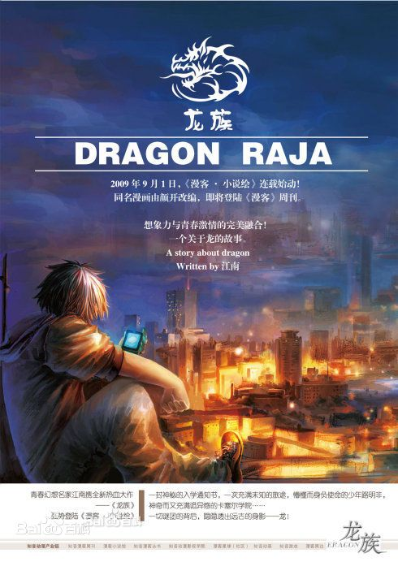

卡塞-尔之门 The Gate to Cassell 人一生里总有几次觉得自己看见了天堂之门洞开，路明非等了十八年，在他最衰的那一刻，门终于开了。 那个走进来的天使四下扫视，目光如刀。 路明非打出“GG”（“GG”，指“Good Game”，在竞技类游戏中称赞对方玩得好，也是认负的意思），切出了游戏。 屏幕上最后一幕，十二艘人类巡洋舰以大和炮聚焦射击，把他的母巢化做一摊血水。 他输掉了今天的第六局，零胜六负。最后一局他坚持了22分23秒，不过最终还是被拿下了，对方的微操很好，用的又是人类，人类的机枪兵在星际争霸里是个变态兵种，出枪速度为零，拔枪就射，收枪就跑，路明非的小狗追不上，在路上就一只只被打爆了。 聊天频道里，对手得意洋洋，“人类打虫族未必要出坦克，韩国高手都不出坦克，开始就爆兵，海量的机枪混着护士冲过去，连消带打……” 路明非可以想象那家伙眉飞色舞的样子。 路明非没吭声，切到QQ上，那个戴棒球帽的女孩头像还是灰色的，一动不动。对方没上线，他又白等了。他抓了抓头发，有点儿失望。另一个头像倒是跳了起来，是个长得很欠的熊猫，ID是“老唐”。 “兄弟你虫族玩得不错了，下次再切！”老唐就是那个打赢了他的家伙，“你就差在微操上，战术意识是很好的。” “好呀。”路明非说。 老唐得意洋洋地下线了，路明非冲着屏幕吐了吐舌-头。 如果老唐亲眼看见路明非的操作，大概就不会得意了，只会骂一句“变态”，而后再不跟他对局。路明非用的是台老式的IBM笔记本，没接鼠标，用的是红点控制。用红点打星际争霸，这是只有疯子才会干的事情，好比用擀面杖掏耳朵。如果要接鼠标的话，大概老唐活不到第八分钟吧？那样就没得消磨时间了。 可路明非也懒得和老唐说自己是纯属无聊在挑战高难度，他有好多时间得消磨，下次老唐不陪他打了怎么办？ 可消磨了很多时间，她也不上线。 何必呢？他有时候也跟自己说。像个傻子似的等啊等，等四个小时，说两三句话，好像是蛮不值的。 可这种事情谁算得出来值不值？ “一箱打折的袋装奶，半斤广东香肠，还有鸣泽要的新一期《小说绘》，买完了赶快回来，把桌子上的芹菜给我摘了！还有去传达室看看有没有美国来的信！还玩游戏？自己的事情一点不上心，要没人录取你，你考得上一本么？在你身上花了那么多钱，有什么用？”婶婶的声音在隔壁炸雷般响起。 路明非觉得脑袋被震得嗡嗡响，一叠声地答应，一溜小跑出门。走廊里安安静静，下午的阳光从楼道尽头的窗户里照进来，暖洋洋地洒在他身上，走道里晾晒着纯白色的床单，窗外风吹着油绿的树叶摇曳，哗哗地响。他靠在门上，听着门里的婶婶还在唠唠叨叨地抱怨，被门隔着，仿佛是另外一个世界的事儿。 又是春天了，路明非，高中三年级，将满十八岁。 他和叔叔婶婶一起住，有一个名叫路鸣泽的堂弟，就读于当地最有名私立高中，学费高昂，师尊严苛，豪车如流水，美\_女如流云。还有三个月零四天他就得参加高考，这些天每个人见了他都谆谆教诲，告诉他末日就要到来，应该焕发斗志。 可压力越大，路明非越懒，除了打星际争霸，就是躺在床-上望着屋顶发呆。 作为一个没什么存在感的人，他的懒惰并不难理解。 路明非有六年多没见过爸妈了，好消息是据说他们都还活着，每半年还会写封信给他；坏消息是每次来信，妈妈都遗憾地告诉他回国探望他的计划又要推迟，因为“事情又有了新的进展”。 他的爸妈都是考古专家，说是在忙一个大项目，结果一旦公布就会像斯文·赫定发现楼兰古城那样震惊世界。上初中时，路明非很为爸妈自豪，读了很多考古方面的书，放学路上和同学津津乐道。但他很快发现该自豪的是有爸妈开车来接的兄弟们。放学之后，一帮同学吊儿郎当地并排往前走，占了几乎半条街的路面，后面就一次次响起汽车喇叭声，然后队伍中立刻有个兄弟收敛了摇摆的幅度，老老实实地钻进自家的车绝尘而去。人一个个地少下去，最后往往只剩下路明非一个人，继续摇摆着向前。 兄弟们隔着车窗玻璃看出去，路明非的背影踢着石头自由自在地远去，非常地羡慕，羡慕他可以随便去哪儿，想逛商场逛商场，想买吃的买吃的，还能去打台球。 “路明非家里对他最好了，从来不管他。” 其实路明非一个人的时候不逛商场也不打台球。他在网吧里坐得发腻之后，就回家了，进了楼却不进屋，从通往楼顶的铁栅栏里钻过去，坐在嗡嗡响的空调机边，眺望这个城市，直到太阳西下。 路明非觉得自家爸妈是男女超人，也许只有某一天他们坐的飞机失事了，他们才会忽然出现在他面前，托着飞机平安落地。若不是那样，他们始终在为世界忙碌，而不是为了他路明非。超人爸妈当然可以用来吹嘘，可事实上跟不存在也没什么区别，路明非都快记不得爸妈的长相了，只有偶尔看小时候的全家福，才能勉强回忆起那一男一女，还有他家那栋外面爬满爬山虎的老楼。 叔叔婶婶更感兴趣的，是路明非爸妈定期从国外寄回来的钱。托那笔钱的福，路明非可以上私立贵族高中，也是托那笔钱的福，叔叔婶婶能买一辆小排量的宝马，叔叔有钱买一些仿得很像的名牌货，婶婶有钱在麻将桌上输，还是托那笔钱的福，堂弟路鸣泽在学校里有了“泽太子”的绰号。路鸣泽和路明非在同一所高中上学，不但成绩比他好，穿衣服也比他精致，而且只要有女孩一起吃饭就抢着付钱，叔叔婶婶还会穿得特别体面参加路鸣泽的家长会，让人感觉路鸣泽是个蜜罐里泡大的孩子。 如果不是因为路鸣泽身高160厘米，体重160斤，应该早都找到女朋友了。 而他路明非是也只是“路鸣泽的哥哥”。 路明非对此倒不介意，连爸妈都不在乎他，对叔叔婶婶还能有多高的要求！ 路明非两手抄在裤兜里，耷拉脑袋看着地面，一路下楼，在便利店里买了婶婶要的东西，又溜达到书摊上，买了一本新出的《小说绘》。 婶婶觉得路鸣泽聪明，好读书，求上进，还特热爱文学，路鸣泽看《小说绘》在婶婶的嘴里也是“我们家鸣泽在学习”，每次《小说绘》出新一期婶婶都觉得中国青春文坛又有了动静，赶着路明非去买回来，让路鸣泽紧跟形势。 楼下报刊亭的大爷觉得路明非又忧郁又赖皮，还热爱文学，老来买《小说绘》，可从来不看，而是蹲在报刊亭边，把新一期的《家用电脑与游戏》白看完，然后扔回摊上，坦荡荡地评价说越来越不好看了，拍拍-屁-股走人。 路明非有点蔫儿坏。路鸣泽经常说在我家里怎么怎么样，指挥路明非帮他干这个干那个，路明非每次都照做，然后他就蛮小人地访问路鸣泽那个秘密的QQ空间。 路鸣泽看了文学书，给自己起了一个笔名叫“寂寞的贪吃蛇”，抄了很多哀伤的句子放在QQ空间里，配上他自己用手机拍的大头照，偶尔还上载几张用点红墨水抹在手腕上冒充割腕的照片，配的诗大概是说没有爱就要去死的意思。路明非知道堂弟春心思动，在学校里天天见光天天死，所以想在QQ上遭遇点天雷地火。 路明非就申请了一个新QQ号，起名“夕阳的刻痕”，挂上一张短发娇俏萝莉的照片，把年龄填成16岁，个性签名写成“让你的微笑和悲伤成为我这一生的刻痕”。趁着路鸣泽在家上网，他就溜去网吧和“寂寞的贪吃蛇”搭讪。三来两去，路鸣泽大概觉得他这条贪吃蛇终于找到可口的食物了，非常乐意让自己的微笑和悲伤成为女生这一生的刻痕，在家里，每天都很高兴哼着信乐团的《离歌》，在QQ上一再地约见面，准备轰轰烈烈地开始了。路明非答应得斩钉截铁，可总约在婶婶拎路鸣泽去学钢琴的时候，路鸣泽每每和娇俏少-女失之交臂，扼腕痛恨，唱着《离歌》的时候也就有点哀愁的调门儿。 这是路明非这些日子来最开心的一件事了。 路明非就是这么一个人，没有多好，也没什么做坏事的本事，活到十八岁，还不知道自己的未来在哪里。 “明非啊，都说你要去留学啊。”报摊的大爷有一搭没一搭地说。 “哪有，申请而已，谁要我啊？”路明非蹲在摊边蹭杂志看。 “出国留学好啊，出国留学回来就是海龟，赚钱多。” “我不想赚钱多，我要是考不上大学，我就帮大爷你看摊儿，你给我点儿钱够我买PS2的盘就好了。” “没出息，看报摊赚不到钱，我是年纪大了。” 路明非翻着眼睛看看头顶绿荫里投下的阳光，“挺好的，可以晒太阳，没人来的时候就发呆，还有过路的美\_女看。” 这个话题让路明非比较沮丧。他确实申请了美国的大学，但这绝不是因为他的成绩太好大有希望。对于他的成绩，人人都有不同的评价方式。班主任说，路明非，你是属秤砣的么？你知不知道你一个人把我们班的平均分拉低了多少？婶婶是对叔叔说，鸣泽成绩好都是我们家的基因，看你家基因就是不行！只有路鸣泽对他很体贴，在QQ上鼓励他说，“夕阳！成绩不好怕什么？我行我路，这才是我们这种人该做的！反正你在我眼里是个好女孩！” 出国这件事，是婶婶灵机一动一力主张的，押着路明非把申请表给填了，还慷慨地付了每所学校几十美元的申请费。婶婶有自己的算盘，路明非的各科成绩中，唯有英语还不错，跟着同班的英语狂人考托福的时候又走了狗屎运，考分不错。以路明非的成绩，上一类本科很难，如今很流行弃考出国，申请一把，再走一次狗屎运拿到美国大学的录取通知，就算对路明非爸妈寄来的钱有交代了。 此外婶婶还有套“小”算盘。路鸣泽的成绩虽然比路明非好点，却也不是顶尖的，上不了清华北大那类婶婶挂在嘴边的名校，如果能弃考出国，也是很有面子的事。但是上大学是一辈子的事情，婶婶还不忍心看着路鸣泽去冒险。她思前想后，大概是想起了什么名人名言说“凡艰辛的路，当由勇敢者以坚硬的脚底踏开”，忽然觉得路明非很是勇敢，于是让他试试用坚硬的脚底给路鸣泽踩出一条路来。如果他失败了，也不要紧，说明此路不通，路明非可以迟一年和堂弟一起高考。 不过艰辛的路显然不是光靠勇气就能踏开的，路上满是崴脚的石头。路明非已经连着收到十几封复信了，开篇大同小异，都是： “亲爱的申请者： 感谢你对本学院的兴趣，但是很遗憾的……” 婶婶花费了好几百美金的申请费，换来的只是美国人一而再再而三的感谢，善人当得很心痛。而路明非不焦不躁，心态如老僧入定，止水不波，只不过为了配合婶婶的沮丧，才在收到拒信时挤出点忧伤的表情来。 如今只剩一所大学没给他复信了，排名最靠前的名校，“芝加哥大学”。 “有我的信么？”路明非在传达室门口探头探脑，拽着英文发音，“Mingfei Lu。” “有，美国寄来的。”门卫扔了一封信出来。 路明非一摸，信封里只有薄薄的一张纸，是拒信无疑。凡是录取信，会夹很多的表格和介绍材料，厚厚的一摞。而感谢你的申请并且遗憾你未被录取，只要一张打印纸就好了。 路明非撕开信封，来信居然是用中文写就的： 亲爱的路明非先生： 感谢你对芝加哥大学的兴趣，但是很遗憾的，你未被录取。 但是，我们常说，路不只一条，只看你愿不愿意选择。 首先自我介绍，卡塞-尔学院是一所位于美国伊利诺伊州芝加哥远郊的私立大学，和芝加哥大学是联谊学校，有广泛的学术交流。 我们非常荣幸地从芝加哥大学那里得到了您的申请资料，经过细致评估，我们认为您达到了卡塞-尔学院的入学标准，在此向你发出邀请。 请您在收到这封信的第一时间联系我校古德里安教授，他正在中国进行一次学术访问，将会安排对您的面试。 有如何疑问，也请联系古德里安教授。我会协助他为您提供服务，我是卡塞-尔学院的学院秘书诺玛·劳恩斯，非常高兴认识您。 你诚挚的， 诺玛 路明非把信放下，摸了摸额头，有点发懵。 本来看开头很对的一封信，一封标准的拒信，怎么过了那句“但是，我们常说，路不只一条，只看你愿不愿意选择”之后，忽然变了呢？显然他已经被列在面试名单上了。路明非的高中同学也不是没有人申请成功过，但是有美国教授千里迢迢来面试的，这还是头一份儿。路明非不知道自己何德何能，他甚至没给这个卡塞-尔学院贡献过申请费。 也许“夕阳的刻痕”的真实身份给路鸣泽发觉了？路鸣泽想办法报复他玩呢？ 不过信封上确实是美国伊利诺伊州的邮戳。 他倒了倒信封，除了那张考究的打印纸，里面再没有别的东西了。他坚定了自己的想法，这肯定是一个骗局，还说第一时间让他联系什么古德里安教授，可连个联系电话都没给他。这样想他反而轻松了点儿。 “签收。”门卫又扔过来一张单子。 “信还要签收？”路明非不解。 “跟着信来的还有一个包裹，要你签收。” 路明非糊里糊涂签了字，拿到一只FEDEX的大信封，里面有个什么硬邦邦的东西。他犹豫了一下，撕开信封，倒出了……一只手机。 纯黑色的N96手机。 路明非觉得自己需要冷静一下了。他打开手机，电池居然还有一大半的电，名片夹里，有唯一一个联系人，“古德里安教授”。 “一定是骗子搞的！而且是小区里的熟人！熟人才知道我们家情况！”婶婶一掌拍在那封信上，说得斩钉截铁。 “可那个骗子会花那么大本钱？N96诶！水货都卖四千多块，行货超五千！”叔叔在那只纯黑的N96上不断地印着自己的指纹，像是老女-人抚摸祖传的翡翠镯子。 叔叔是个很讲品位的人。路明非曾有幸和叔叔一起出去赴饭局，看见叔叔左手手机右手打火机，不轻不重地拍在桌上，又在聊天中不经意地捋起袖子露出那块广州买的高仿万宝龙表，赢得大家对他品位的一致称赞。最近叔叔不只一次跟路鸣泽说起，新出的N96很“高级”，符合他的品位。可是掌握家里财政大权的婶婶坚定地对他说，“No”！ “什么卡塞-尔学院？一定是骗钱的！还什么芝加哥大学的联谊学院，去年我们学校排名第一的楚子航考出国，也是去的一个芝加哥大学的联谊学院，楚子航一个堂哥是一个大学的教授，都拿到绿卡了。这种名校的联谊学院都跟常青藤差不多的，美国人都进不去！”路鸣泽难得如此关心哥哥的未来。 路明非知道楚子航是路鸣泽的偶像。同学里大部分人还穿耐克和阿迪达斯时，楚子航已经开始用“Burberry”一类的牌子，楚子航把一条“Burberry”围巾在“Diesel”的套衫外打了个松松垮垮的结子，冷着脸在过道上经过，全校的人都说他英伦风。有一次两个女生被学校处罚，因为她们为了争“楚子航是谁的”而撕破了对方的脸，而楚子航甚至还没有和她们说过一句话。 路鸣泽把这位学长的事迹告诉“夕阳的刻痕”，非常励志地说，总有一天他会骄傲地向整个中学的人证明他一点儿不比楚子航差。 路明非觉得问题核心在于满年级女孩的媚眼，路鸣泽更在意的是“如何变成一只统帅一群母狮子的公狮子”，而非做得像楚子航一样棒。 路明非一点儿也不羡慕楚子航，他有时候想这帮人把楚子航当作偶像，可谁也不知道楚子航去美国干啥了，也许他正在美国餐馆里洗盘子。他无师自通地有几分阿Q精神。 路明非的语文老师拿他的作文作为反面例子在课上大加挞伐，说他的作文毫无幻想精神，透着悲观主义的情绪，跟他的人一样，毫无进取心。 路明非当时有点想站起来，说自己也是有幻想的。 某一次看了三部连映的《黑客帝国》，路明非忽然觉得自己应该有种非常神奇的能力还没有被发掘出来，像“Neo”那样，是“the one”。某一天会有一个神秘人物来发掘他这个能力，他将在众人灼灼的目光里摇身一变……做一番惊天动地的大事。 可语文老师批评的时候高瞻远瞩，直视教室最后几排正在打瞌睡的同学，连眼角的余光都没给路明非，所以路明非只能缩缩头，放弃了解释自己的心路历程。 没有人跟他讨论这个伟大的构思，他只能自己不断地构思细节。等到路明非上了高三，这个幻想已经被场景化了。每次学校办春节联欢晚会，班里那个钢琴十级的小美\_女柳淼淼在舞台上弹琴，同班男生一色黑礼服围着钢琴翩翩起舞，路明非就托着腮帮子坐在一个被人遗忘的角落里，浮想联翩，想着也许会有一架直升飞机从天而降来接他，有一群黑衣墨镜男以电影里面CIA特工般的冷酷走进会场，沉着嗓子说，路明非先生，不是看春节联欢晚会的时候了，组织在召唤你。他们会给路明非套上黑色的军服和长风衣，簇拥着他在同学们的目光中离开会场，会场外一架漆黑的直升机轰响着，巨大的旋翼掀起狂风，如刀割面。那时候无论是小美\_女柳淼淼还是跳舞的男生，都会停下来呆呆地看着路明非的背影。 这个故事的重点不在于他将怎么拯救世界，而在其他人望向他背影的目光。 超拽！ 路明非其实也明白，这份想象不过是打发时间而已。但他从自己身上实在找不到什么优点可以自豪。对他而言，未来应该就是上一个不出名的大学，在大学里谈个恋爱，出来找份工作租个房子，也许他父母偶尔想起他的时候会催催他结婚，然后他就结婚了，生个孩子，天天上班。 随着这封来自美国的信，他一潭死水般的生活居然要发生点改变了。可在这次家庭会议中，他就像是个局外人，缩在沙发一角双手老老实实地放在膝盖上，客厅里回荡着叔叔婶婶和路鸣泽永无止境的叨叨。 他起身走出了客厅。完全没有人注意到他这个主角的离开，剩下的三人依旧争论着这封面试通知书的真伪。婶婶和路鸣泽有点受打击，如果这封信是真的，就是个天大的狗屎运，十年都落不到一个人身上，却落路明非身上了。婶婶不习惯这个蔫巴孩子忽然抖擞起来，这样子路鸣泽将来怎么胜过？ 路明非回到自己房间，连上了QQ，盯着戴棒球帽的女孩头像看，头像还是灰的，离线或者隐身，反正没有留言。路明非看了一眼墙上的挂钟，他是18个小时以前留的言了，问陈雯雯明天晚上要不要参加文学社的活动。 陈雯雯其实并不戴棒球帽，她有一头细软笔直的长发，很漂亮，用不着拿棒球帽遮掩。路明非认识陈雯雯是在进校的那一天，陈雯雯很低调地被一辆帕萨特送来，穿着白色的棉布裙子和一双蕾丝花边的白短袜，长发上别着一只“Hello Kitty”的发卡。路明非班上最惹火的女孩应该是“小天女”苏晓樯，苏晓樯那天一身DKNY，被一辆奔驰S500送来，眼角眉梢都跳荡着骄傲，挥别了她做煤矿生意的老爹之后进班报到，带着审视的目光打量新班里的男生们，也期盼他们以惊慕的眼光回看。但是男生们都斜眼看着窗边的角落，陈雯雯办完手续之后就捧着一本杜拉斯的《情人》坐在那里的长椅上，阳光照在她的棉布裙子和肌肤上，一切仿佛都是透明的。 “小天女”骄傲了十五年，进高中的第一天就被一个小文艺女青年打败了，满腔的不忿。偏偏有一个没眼色的男生站在她身边，对着陈雯雯指指点点，压低声音跟“小天女”说，“那个估计就是我们新班的班花了。” “小天女”何曾受过这等欺辱，在男生脚面上狠狠踩了一脚，掉头就走。 那个男生就是路明非。 其实路明非是个非常坦白的人，他觉得陈雯雯比“小天女”好看，他就这么说了，谁知道跟“小天女”结了整整三年的冤家。当时围着陈雯雯观赏的，足有七八个男生，每一个都这么想，可是其他人都懂得“默默欣赏”的道理。后来这些人组了文学社，文学社的核心就是陈雯雯，每周活动，读一些又冷又悲伤的欧美文学作品，还写读后感交给语文老师批改。按照路明非叔叔的说法，读的都是些“中产阶级女白人”读的书，不明白路明非这般脑袋里缺根弦儿的家伙为何会是文学社理事。 对路明非来说，陈雯雯是他生命中第一个女性偶像，给他树立了一个宜室宜家的好女孩形象。十五岁时，路明非觉得世上最大的幸福，莫过于娶了陈雯雯。路明非觉得自己有点点希望，是因为他是陈雯雯邀请加入文学社的，社长陈雯雯统共只邀请过两名社员，一是路明非，还有一个是“小天女”志在必得的赵孟华，描述赵孟华比较简单，他是学校里最可能成为“楚子航第二”的家伙。 赵孟华也在申请出国，也没拿到任何录取，可这个昏了头的卡塞-尔学院居然把面试通知书发给了路明非。 “切一盘？”QQ上一个大脸猫头像跳闪起来，名字是“诺诺”，路明非不记得什么时候加过这个人了，不过他从不拒绝别人的邀请，原本加他的人就很少。 “好啊。”路明非漫不经心地回答。 路明非还是用红点操作，他心里有事儿，懒洋洋的，而且“诺诺”听名字是个女孩，频道里真正打得好的都是些大叔级人物。但是很快，路明非发现这个对手非但凶狠而且狡猾，他走神的瞬间，派出去探路的工蜂就被对方用两条小狗埋伏了。损失一只工蜂并不算什么，但是那个精巧的小圈套让路明非警觉起来，他在家中加固了防御，同时出了六条狗在周围巡逻，这救了他一命，对方的一队小狗在入侵的第一瞬间就被他觉察了，失去了偷袭机会的狗队只能立刻回撤。 路明非不敢再疏忽了，接上了鼠标。 正式的鏖战这才开始，双方的主力兵种从小狗升级到刺蛇，又不约而同地在刺蛇进攻的同时派出飞龙空袭，打双线进攻。皇后出场时，双方的搏杀已经白热化了，双方各有四个基地，混合兵种在中央的空地上展开了激烈的拉锯战，成片的血浆泼洒在战场上，路明非额头出汗，手在键盘上仿佛弹奏钢琴那样跳动，他估计对方也不容易，双方这么拼微操，快比得上职业选手了。路明非第一次遭遇这么强的对手，起了好胜心，决定冒险把主基地升到三级，出动吞噬者、守护者和猛犸这“三套车”。这是一个根本的战略转型，如果对方稍有犹豫，没有趁他把资源花去升级的间隙进攻，路明非就必能取胜。 升级的进度条在缓缓推进，路明非心跳加速手心冒汗。他虚张声势，在外面补了一队刺蛇和三只潜伏者，如果对方相信路明非在囤聚重兵而不敢进攻，那么她就上当了，路明非只有那么些兵，他把全部资源都消耗在升级上了。 快了，很快升级就要完成，“三套车”一旦出场，空地并进，可以一个接一个稳当当地吃掉敌人的基地。 路明非感觉到了胜利的曙光。 “你在升三级基地。”屏幕下方跳出了一行字。 路明非愣住了。 “你退吧，我这里有四队刺蛇四队狗，全部升到二级攻防。”诺诺接着打字。 进度条就要到头了，但是路明非只能打出“GG”。诺诺在打字的同时和他共享了视野，路明非正在升级的三级基地外，诺诺的大兵压境，一旦进攻，就是摧枯拉朽般的大胜。 路明非退出游戏，回到QQ界面，对诺诺说，“佩服！” 诺诺没有回答，留了一个咧着满嘴大牙狂笑的表情，下线了。 路明非的一生里，第一次觉得自己被什么人看透了，像是最亲密的朋友，分别了很多年，重新回来找他。他坐在那里发了一会儿呆，点击查看诺诺的资料，却是一片空白，他搜寻自己的记忆，确信自己从不认识这么一个打星际争霸的好手，还是个女孩。 陈雯雯的头像在列表中跳动，却是灰色的，这说明陈雯雯上过线，但是已经离开了。 “去啊，后天见。”这就是陈雯雯给他的留言。 他等了差不多十九个小时，看到的只有这五个字。但他低沉的情绪忽然像是被蒸发掉了，蹦-上-床吹了声口哨，扭-动腰肢，满脸春光灿烂，忘记了输给诺诺那回事儿。 路鸣泽走进他和路明非共同的卧室时，上下打量了堂哥一眼，不耐烦地说，“爸妈给那个古德里安教授打电话了，说后天去丽晶酒店面试，让你好好准备一下。” 第二天晚上。 “喂，老唐，你知道美国大学面试都会问些什么问题么？”路明非在QQ里打字。 “怎么？你获得面试机会了？”老唐的熊猫头像一个劲儿地跳。 老唐是路明非能想到的、唯一个能帮上忙的人，老唐在美国纽约住，是个华裔，大概是姓唐，大家都叫他老唐，但是年纪并不大。据说老唐从小就在美国长大，所以中文说得不太利索，不过上网打字还是可以的。老唐这个人除了自我感觉有时候太好没有其他毛病，人生目标是成为一个印第安纳·琼斯。 “嗯，明天早晨就面试，可我在网上搜了半天，不知道都面试什么。”路明非老老实实地回答。 “这个……不同学校的面试题可都不一样，比如纽约大学的和哈佛大学的完全不一样。” “那你熟哈佛的还是熟纽约的？” “我没有告诉你我高中毕业了就进入社会工作了么？”老唐在屏幕上贴了一张沮丧的熊猫脸。 “这‘进入社会’四字就显得你中文长进明显啊！” “得了得了，视频语音吧，我给你辅导辅导发音。”老唐说。 路明非看了一眼旁边床-上睡着的路鸣泽，犹豫了一下，“那你小点声儿，我堂弟睡了。” “没问题。” 视频语音“嘟嘟”响了两声后接通了，窗口里一个耷拉着眉毛、很喜相的家伙挥挥手，声音大得像是打雷，“嘿！兄弟！” 路明非吓得差点扑过去把音箱吃了。 “小声！小声！”路明非一边冲老唐摆手，一边拔掉音箱的线，插上了耳麦。 “有什么大不了的？”老唐嘟哝，“我租的房子靠近轻轨线，噪音比较大嘛，你在哪儿呢？那么小心翼翼的。” “我住叔叔婶婶家啦。”路明非小声说。 “哦哦。”老唐点头，压低了声音，一口跑调的中文，“那兄弟你这申请成功了就能自己出去住了？早说啊，你的面试包我身上了！” “老唐你真够意思。”路明非竖起大拇指。 “作为频道里星际的第一名，对第二名不够意思，不是显得我这种大哥白当了么？”老唐说，“哈哈！” 一瞬间路明非有点感动，对明天的面试多了几分信心。他白天晃悠了一整天，下午照旧在楼顶上看落日，根本抓不着头绪。根本没人能告诉他美国大学的面试是怎样的，其他参加面试的人，大概正在家教或者爹妈的指导下一字一句地纠正发音了吧？可路明非找不到任何人来帮他。他是在网上晃了很久之后碰巧看到老唐的QQ头像在跳，抱着试试看的心理去敲他。他和老唐也不熟的。 原来在他想不到的角落里，还是会有个人能够帮到他的，带着一种莫名其妙的大哥心态要来照顾他这个小弟。 义气，这就是义气啊！ “说起来我也是父母双亡的人啊，”老唐接着唏嘘，“你知道美国这里混很不容易的，尤其是我们这种父母双亡的人，好在我可以领社会救济……” “啊呸呸呸呸呸！谁父母双亡？我老爹老娘只是出门不在家！”路明非使劲啐他。 “哦哦，骚瑞骚瑞，会错情表错意了。”老唐在窗口里连连拱手。 “拜托大哥，你能不能不要用你的蹩脚中文了！什么骚瑞？是sorry好不好？我们现在不是口音辅导的时间么？”路明非被他的脱线整得没辙了。 “嗯嗯，对对，辅导完了你我还得去再打几盘呢，快快！现在开始！”老唐清清嗓子，“面试里最常用的开场问题是，你为什么要申请我们学校，Why did you apply this college, please show me some reason?” “可我没申请……” “来！别废话，跟我练！兄弟我要对你的人生负责！The great faculty is the key reason, and your college have very good research atmosphere…” “The great faculty is the key reason, and your college have very good research atmosphere…” 路明非一个发音一个发音地跟着老唐。 夜越来越深了，这座南方小城万籁俱寂，路灯照亮空旷的街道，楼宇的灯光大多熄灭了，只剩下三三两两未眠人的窗口还亮着。其中一个窗户里，少年用他不甚清晰的发音一再地重复着某些句子，临时抱佛脚，而一个远隔几万里的家伙正吃着酸奶，对他每一个错误的发音喊No、No、No！ 路鸣泽翻了翻眼睛，瞥了一眼路明非，不耐烦地哼了一声，双手塞-紧耳朵，翻了个身。 第三天早晨，丽晶酒店。 这是这座城市里最豪华的酒店，全球连锁，五星级，路明非知道这间酒店，因为叔叔最喜欢在这里的大堂喝喝茶跟朋友们聊天，一直让服务员续水到酽茶变白开水，这样花费不高，还能让他有享受世界顶级服务的优越感。 路明非没进过这家酒店的玻璃门，此刻瞪着一双熬夜发红的眼睛左左右右地看。 这酒店真他妈的豪华！美国学校真他妈的有钱！路明非心里赞叹。 他坐在行政层的会议厅外面，外面不多不少，放着17把椅子，17个面试人每人一把椅子，不多不少。没有人要求他们出示任何身份证件，路明非小心翼翼地踏进这间酒店的大门时，就有服务员微笑着说，是来参加卡塞-尔学院面试的同学么？请跟我上行政楼层。然后他就被一个穿着套裙和十厘米高-跟-鞋的漂亮姐姐带到了这间屋子里，看见了他的熟人们。 陈雯雯、苏晓樯、赵孟华、柳淼淼，都在。还有些是见过但叫不出名字来的，也是他那所学校出来的，也有些是从未见过的。 “路明非？”每个认识他的人都发出这样惊讶的声音，好似他出现在这个场合是件十分奇怪的事。 对此路明非只好挥挥他手里那封信，咧嘴笑笑说，“我也是来……”他吞口口水，“面试的。” 然后灰溜溜地做到最后一把椅子上，椅子上放着一张表格和一支铅笔，上面是些名字年龄之类的东西需要填写。路明非一面填写一面目光四处飞。 情况看起来糟糕透顶，大家都是有备而来，而且个个劲敌。赵孟华的发音是不用说的，他的家教是个美国人，苏晓樯的发音也是不用说的，她初中时在美国住过一年，一向很随性的陈雯雯也细心地搭配了衣服，一件深蓝色的套裙，白色的蕾丝边袜子和平底黑皮鞋，扎着白色领巾，头上的发卡换成了珍珠贝的，像是电视上那些英伦贵族子弟的校服。 路明非挠挠头，叹了口气。 “穿得真好看。”他对于对比实力这件事失去兴趣之后，扭头过去打量陈雯雯。 服务员送上了茶点，牛角面包和一杯热奶，路明非吃着面包喝着热奶，解决了饥饿温饱问题之后接着看陈雯雯。一会儿，他脑袋里一个念头一闪……没准儿他走了狗屎运过了，就能和陈雯雯一起出国读书？ 他仰头看着屋顶，忽然呆笑了两声，把周围人都给吓了一跳。 “路明非，别出声，考官来了，就在里面。”陈雯雯捂着嘴，向着他轻声说，指指里间的会议室。 “你准备好了么？”路明非眉开眼笑地上去打岔，这是句废话，他就是想听陈雯雯说话而已。 “没什么把握啦，”陈雯雯看了那边的苏晓樯和赵孟华一眼，垂下眼帘，有点沮丧似的，“我口语没他们两个好……” “你肯定没问题的！我觉得你口语蛮……”路明非说。 “柳淼淼到了么？”里间会议室的门被推开了，一个身材瘦高的年轻男人走了出来，操着一口流利的中文，长着一张中国的不能再中国的脸。他穿着一身墨绿色的西装，修身合体，领口是银色的细边，金色的衣扣和袖口闪亮，胸口处有用银线刺绣的徽章，看起来像是校服，可路明非没有见过剪裁那么精致的校服。 钢琴小美\_女噌地站了起来，声音微微有些颤-抖，“到！” “我是考官叶胜，请跟我来。”年轻人微笑，露出雪白的牙齿。 柳淼淼踏着优雅的步子和叶胜一起进去了，门随即关上，剩下的16个人扭头对着眼神，谁都没法掩饰脸上的紧张。 “喂，你们上网搜了这个卡塞-尔学院的网页么？”赵孟华看了看苏晓樯和陈雯雯，压低了声音，“据说是个名校，好多哈佛的教授转去那里教书！” “嗯，”陈雯雯点点头，“可我都没有申请他们学校就接到面试通知书了。” “名校都是这样，不在乎申请费，只看素质的吧？”赵孟华说。 “只看素质怎么会让这样的混进来了？”苏晓樯斜着眼打量路明非。 路明非扭-动肩膀，一副死猪不怕开水烫的架势。 “不知道录取几个。”陈雯雯低声说。 “选一两个就不错了！”苏晓樯说，“你们没听说么？哈佛每年只从中国招几个本科生。” 路明非心里“咯噔”一声，他对于哈佛每年从中国招多少人没概念，不过试想偌大中国也就区区几人，这狗屎运落到他头上的机会确实是微乎其微。他心里好不容易攒的一点信心去了八成。 “嗯，我也就是来试试，没抱什么希望。”陈雯雯细声细气地说。 “都没抱什么希望了。”赵孟华安慰她。 “我不在乎，”苏晓樯一如既往地趾高气扬，“要是不录取我，我就去上斯坦福，我爸爸有朋友！” 门被推开了，叶胜礼貌地比了一个手势。柳淼淼走了出来，回头跟叶胜说了声谢谢，看得出她强撑着不想露出失望的表情，但是那失望已经老老实实地写在脸上了。 钢琴小美\_女居然没撑过十分钟就败下阵来！柳淼淼眼眶有点红，回自己座位上拿了书包，扭头就往外走。 “苏晓樯。”叶胜说。 “小天女”也是“噌”的一声站了起来，漂亮的眼睛瞪得老大，牙齿咯咯作响。 看着苏晓樯步伐僵硬地跟着叶胜进去了，路明非“哈”地笑出声来。 “别笑人家，你不怕啊？”陈雯雯在他肩上推了一下。 “我不怕，我怕什么啊，我就是一打酱油的嘛。”路明非双手枕在脑后，在椅子上四仰八叉。 “小天女”出来时，步伐比进去时还僵硬，脸上与其说是失望或者沮丧，不如说是愤怒。叶胜在她身后彬彬有礼地笑，苏晓樯扭头狠狠地看了他一眼。叶胜又叫了赵孟华进去。 “什么学院！他们耍人！”苏晓樯抛下这句话，扭头就走。 路明非和陈雯雯对视一眼，不明所以，“小天女”还不如柳淼淼，大概只撑了五分钟。 这面试官在里面不像是面试，倒像是练刀，斩人越来越快，号称高三口语第一的赵孟华连三分钟都没撑到，被送出来的时候目光茫然。 “陈雯雯。”叶胜说。 “好运啊！”路明非压低了声音在陈雯雯身后喊。 陈雯雯扭头看了他一眼，轻轻点头。 时间一分一秒地过去，外面所有人都保持着安静，路明非听见自己的心扑通扑通地跳。他有点害怕，害怕陈雯雯出来的时候也是一脸失望。 陈雯雯撑了十五分钟，她出来的时候，脸上没有什么表情，一路低着头看着自己的脚尖。 “怎么样怎么样？”路明非凑上去。 陈雯雯犹豫了一下，悄悄对他招手，“他们会问……” 路明非满心欢喜，刚要把耳朵凑过去，就听见叶胜说，“路明非。” 路明非一愣，扭头看叶胜对他招手，“路明非，下一个是你。” 奇怪，他从未见过叶胜，难道只靠寄给芝加哥大学那份申请表上的两寸照片，叶胜就一眼认出了他？路明非有点好奇。 他跟着叶胜进了会议室。会议室里空荡荡的，可以坐几十人的大型会议桌边只坐着一个笑得很甜美的女孩，和叶胜一样的制服，只不过是套裙，领口塞-着玫瑰红的蕾丝领巾。 “我叫酒德亚纪，也是这次的考官。”女孩站起身来，以典型日本风向路明非躬腰行礼。 “我哈腰。”路明非想也不想，也一躬腰回礼。 宅了那么多年，玩了无数PS2游戏，看过无数日漫，他也会两句日语口白。 “おはよう。”酒德亚纪掩着嘴轻轻地笑了，纠正路明非那一口河南腔的日语，她笑起来有种姐姐般的亲切。 看起来给考官的第一印象不错，路明非心里一喜。 叶胜坐在酒德亚纪的身边，打开笔记本，看着路明非，“那么我们就开始了。” 路明非点点头，深吸一口气，气沉丹田！他修炼了一晚上，这就要见真章了！ “你相信外星人么？”酒德亚纪轻轻柔柔地问。 路明非愣了一瞬，随后感到……一颗核弹脑袋里爆炸了……漫天的蘑菇云，其他的什么也没有。 这是怎么回事？第一个问题分明应该是“请介绍一下自己”或者“你为什么要申请我们学校”啊！ 第一道题的答案是，“My name is Mingfei Lu, a Chinese high school student, I like online computer game and panda…” 第二道题的答案是，“The great faculty is the key reason, and your college have very good research atmosphere…” 这些答案经过老唐热心地润色，再由路明非来来回回背了七八十遍，才算大功告成的。 可这……外星人是怎么回事？ 做好的准备……全然无用！ 路明非眼睛瞪得铜铃大，脑袋慢慢地耷拉下去。他就是这么衰的一人，运气永远渣到爆，什么考前在课桌上拿铅笔写满了公式，考试时老师忽然要全体交换座位，什么好不容易偷看到邻桌的答题卡，结果发现人家是A卷他是B卷……作为一个衰人，他就该勇于相信自己的命运，而不必做什么无谓的抗争。 “相信啊，我相信有外星人的。”路明非说。他忽然觉得赵孟华能撑三分钟已经是一条好汉了。 “是么？”酒德亚纪神色淡淡的，从她脸上看不到任何正面或者负面的反馈，“为什么会相信呢？” 见鬼，为什么会相信？这个相信就是相信，反正世界上没人能证明自己见过外星人，还不是有那么些人就是相信，那么些人就是不信。这个好比问你说，你为什么喜欢隔壁桌那个穿白棉布裙子的女生呢？虽然你能找出成千上万的理由，但是真正的原因无非是你也不知道怎么回事，看见她心里就老是跳，特别在意她说的话，以及记着所有跟她相关的事情，于是你就知道自己喜欢她了。为什么？没理由的。路明非想。 “我经常晚上在楼顶上瞎晃，没事儿看星星。”路明非说。 “嗯，好，没事儿的时候会看星星。”酒德亚纪非常认真地笔录。 路明非完全不理解她那份认真劲儿，就好像路明非是中国外长，刚刚严肃地说出无数外交辞令，需要认真录在纸面上一样。 “你要是也看星星，你就会想啊，要是没有外星人，宇宙那么大，直径几百亿光年，一束光从宇宙这头跑几百亿年才能跑到那头，中间要经过很多很多星系，但是只有在地球的时候才能遇到人，但是光经过地球连一秒钟都不要，几百亿年里只有一秒钟会遇到人，那才很奇怪，对不对？”路明非说。 “孤独感？你刚才暗指光的孤独感？”叶胜插了进来。 路明非挠挠头，他其实并没有什么暗指，不过看起来自己的答案被引申得稍微深刻了那么一点点，于是他就点点头，默许了叶胜把自己看作一个孤独的小孩。 “第二个问题，你相信超能力么？”酒德亚纪又问。 “相信啊。”路明非说，“超相信的。” 其实豁出去之后回答这些问题倒丝毫不难。要是没有超能力，那空条承太郎的“白金之星”不就没有了，路飞的“橡皮果实”也不存在了，飞影的“炎杀黑龙波”自然也是假的了，那么世界上主要的存在就变成了叔叔嘴里永远念叨的万宝龙表和婶婶日益抱怨的房价飞涨，路明非的未来就是每天早晨起床赶公交上班，每月月底拿工资付房贷，周末小心地去丈母娘家伺候……如果有女孩愿意嫁给他的话。 所以，在路明非的世界里，超能力是一定要有的。 “嗯，为什么相信？”酒德亚纪带着鼓励的笑容看着路明非。 “相信……那就是相信咯，就像相信有外星人一样。”路明非说。 真实的理由实在没法给酒德亚纪说，总不能说，“我好喜欢空条承太郎的‘白金之星’，我希望那是真的。” “嗯，彪悍的人生不需要解释啊。”叶胜说。 路明非一愣，不明白这考官为什么忽然说出这种网络切口来。 “大概是嘲笑吧？”他想。 “那么第三个问题，你觉得人类生存的基础是唯心的，精神和灵魂的，还是唯物的，物质和肉-体的？”酒德亚纪问。 路明非瞬间懵掉了。 这个学院的面试官脑子烧坏了么？为什么前面两题和第三题的差别那么大？这是高中政治课上的内容吧？分析唯物主义和唯心主义的。可是路明非过了会考之后就把那些全都忘光了！ 他脸色涨红，猛吸几口气，心想不知这道题上折了多少人，不过自己一定要撑过去！ 他长长地吐出一口气，翻翻白眼，吐了吐舌-头。 “这……吐舌-头是什么意思？”叶胜迟疑地看了一眼酒德亚纪。 “我不知道。”路明非叹了口气，“问题太高深，我真的答不出来，我……可以放弃么？” 叶胜和酒德亚纪沉默了一会儿，点点头，“可以，感谢你对卡塞-尔学院的兴趣。” 叶胜起身，“我送你出去。” 路明非支撑了一分三十秒，创下了最快被斩的记录。 陈雯雯正拎着包在外面等他，看他出来小跑了几步过来，“你怎么那么快就出来了？” “挂在政治题上了……”路明非耸拉着脑袋，“我哪有你们那么强，你回答了几道题？” “我也是在政治题上吃亏了，答得乱七八糟，他们说我没有过。”陈雯雯低下头去。 “你在里面呆了十五分钟啊！”路明非吃了一惊。 “给他们讲了十五分钟的飞碟……”陈雯雯小声说。 “啊？”路明非傻眼了。 转瞬之间，他心里涌起一阵欢喜，伸手在陈雯雯头上拍了拍，“没事啦没事啦！那帮疯子出的题，谁能过谁也是疯子！” 陈雯雯抬起头来，沮丧的脸上露出一丝笑来。路明非心花怒放，觉得这是自己这一天获得的最大的奖励。 不出国算得了什么？陈雯雯也不出国！ 深夜，叶胜坐在会议桌边，又一次翻检那些履历。 他抬头问旁边的酒德亚纪，“那个小丫头呢？一整天没看见她，面试也不来，她也是面试官呢。” “不知道哪里玩儿去了，她跟着来根本就是来玩的吧？”酒德亚纪耸耸肩，“没办法，其实还是个小女孩啊。” “面试结果怎么样？”门打开，一个人拎着手提箱急匆匆地进来，“我买了红眼航班的票，刚刚降落就直接过来了。” 那是个老人，风尘仆仆，鼻梁上架着深度眼镜，一头花白的头发蓬蓬松松，不是烫过而是不知多久没梳理过，一身邋遢的西装，一条肥大的裤子。 “古德里安教授。”叶胜起身，“我们一共面试了17个学生……” “不要浪费时间！我只是来问路明非！我只关心路明非！”古德里安教授满脸紧张，好像他是学生家长而不是考官，“告诉我，路明非，他答得怎么样？”这德国血统的老家伙好一口流利的中文。 叶胜和酒德亚纪对视一眼，叶胜翻到了路明非的记录页。他犹豫了一下，摇了摇头。 “只用一分半钟就离开了。”叶胜说。 “最强的人交卷永远是最快的！”古德里安教授欢欣鼓舞。 “这……第一题，他相信有外星人，因为觉得如果没有外星人，在宇宙里人类挺孤单的……”叶胜苦笑。 “多棒的答案！我真要被他感动了！”古德里安教授啧啧赞叹，“不愧是路明非啊！” “有……有这么棒么？”叶胜呆住了，“第二题，他也相信超能力，没什么理由可说……” “完美！”古德里安教授斩钉截铁地说。 “这叫……完美答案？这就是……学院拟定的答案？”叶胜和酒德亚纪面面相觑。 “让我给你解释！”古德里安教授说，“第一题，他回答说他相信外星人，不仅如此，他还提出了‘孤独感’这个重要的概念，凝聚我们这个族群，就是孤独感！三个字，直指这道题的核心，这道题，就是用外星人暗喻我们族裔和普通人的区别。第二题，相信一件事是绝对不需要理由的，我们所说的相信，是从内心生出的，天然的信任感，如果他为信任编造理由，反而会减分。第三题他怎么回答的？” “我不知道诶……”酒德亚纪摸着自己的额头，“我是说，他说他不知道……” 古德里安教授抬头深吸一口气，“如果我不知道他有那么强的血统优势，我会以为他偷看了答卷的。” “不会答案就是……‘我不知道’吧？”叶胜抓头。 “答案就是‘我不知道’，他的血统决定了他的世界观，跨越两族之间的人，对于世界的理解也介于唯心和唯物之间，这说明了他的潜力。”古德里安教授大声说，“真正有潜力的学生，在对世界的理解上一定会存在这样的犹豫！” “古德里安教授，你这纯粹是……包庇吧？”酒德亚纪苦笑。 古德里安教授愣了一下，摊了摊手，“好吧……是有点……不过我真觉得他答得挺好……” “我理解学院会给予血统优势的学生很多方便，不过这样包庇……是不是太明目张胆了？”叶胜摇头，“要是这样，我们还面试什么？” “你们不懂，几十年了，才出现这么一个‘S’级的候选人，如果我们给出的面试结果是不及格……校长也不会放过我们的！” 叶胜和酒德亚纪对视了一眼，“真的是……‘S’级？” “是，经过再三确认，他在所有候选人中的评级是‘S’，唯一的‘S’！这场面试，事实上是为他一个人准备的！”古德里安教授点头，压低了声音，“这是学院最高级别的机密，所以在出发之前没有告诉你们。” 一片肃静。 “啊！”亚纪忽然出声。 古德里安教授一把捂着心口，“你忽然鬼叫什么？” “我只是忽然想起一件糟糕的事，教授你心仪的‘S’级学生……他似乎对于自己的回答非常地失望，所以说完‘我不知道’后，他表示了弃权，然后直接退出了考场。”亚纪和叶胜面面相觑。 “答得那么好，为什么要弃权？”古德里安教授惊得像是要蹦起来。 “这种问题和配套答案……”叶胜耸肩苦笑，“只有你才会觉得答得好吧？” “要挽回！必须挽回！我来给学生家长打电话！”古德里安教授摸索全身找手机。 叶胜挠了挠头，叹了口气，“还是我来打吧……您这样会吓到学生家长的，觉得您居心叵测。” 深夜三点，万籁俱寂，电话铃声横穿路明非家的走道。 婶婶从睡梦中惊得坐起，扭头看见床头柜上那部电话响得无比欢快，几乎是在蹦蹦跳跳。 “你家死人啦？半夜三更打电话！”婶婶抓起电话，怒气冲冲地喊。 很快，她的怒容消退了，一句话也说不出来，叔叔从被窝里坐起来，看见老婆头发散乱，目光呆滞，仿佛被雷劈了。 路鸣泽也被隔壁的电话铃声吵醒了，扭头看见隔壁床-上，堂兄在梦里-舔-了-舔-嘴唇，发出猪一样快乐的哼哼。 次日上午，丽晶酒店。 九楼行政层VIP餐吧，路明非全家倾巢出动。叔叔西装笔挺，腆着肚子，教育路明非和路鸣泽来这种高级场所要懂规矩，不要总在餐具上摸来摸去。婶婶四下顾盼，啧啧赞叹高级酒店就是高级。 “路明非先生？绿茶还是黑茶？”衣冠楚楚的侍者走到桌边，对着被叔叔婶婶夹在中间的路明非发问。 “都什么价位啊？”叔叔显示出经常出入高级场所的气派。 “对于总统套房的客人全部免费，古德里安教授订的是总统套房。” “美国学校真有钱！”婶婶瞬间对卡塞-尔学院肃然起敬。 “叮”的一声，直达电梯打开了门，花白头发的魁梧老人向着靠窗的桌子大步走来，左边叶胜，右边酒德亚纪，左牵黄右擎苍，俊男美\_女，威风凛凛，上来二话不说一把握住路明非的手，“你好！路明非！” “你好……古德里安……教授？”路明非在这份洋溢的热情前有些窘，“您中文说得真好。” 古德里安教授眼睛一亮，高兴地抓头，“有这么好？我跟着中央电视台新闻联播学的，我们学院全面普及中文，谁都知道中国将成为世界上最繁荣的地方嘛！”他看着路明非，目光闪闪，一脸拉拢的表情，“加入我们，不需要英语的，全校学生都说中文。” 路明非眨巴着眼睛。什么意思？说中文？不需要说英文？在他没什么亮点的人生里，也就那份托福成绩单还能凑合看看了，如果唯一的亮点都忽视了，卡塞-尔学院看中他什么？这初次相逢的古德里安教授脸上，简直是“欢天喜地”的表情。 “你好，古教授，我是路明非的叔叔。”叔叔不甘寂寞地挤进古德里安教授和路明非之间。 因为记不住古德里安四个字，他非常巧妙的简化为“古教授”了。 “贤叔侄长得还真不像啊！”古德里安教授和叔叔握手。 这次轮到叔叔窘迫了，这古德里安教授虽然气魄很大住着总统套房，不过看起来是有点脱线。 叶胜在后面扯了扯古德里安教授的袖子，三个人坐在桌子对面。 “用早餐吧。”古德里安教授左手叉右手刀，目光始终落在路明非身上。 路明非觉得他看自己的眼神好比饕餮客看一只烤鸡，充满期待。 价格不菲的早餐包括了鲑鱼卷和鲜榨柠檬汁，纯银的餐具那是相当气派，这一切立即打消了叔叔的不快，反正本来路明非长得不像他也不是什么丢脸的事。宾主尽欢。 古德里安教授盛赞路明非在面试中表现出色，叔叔也乐得表示一看卡塞-尔学院就知道是美国贵族学校，这气派叫中国大学真无法相比。 叶胜做了充分准备，把在美国教育部注册的正规大学执照副本拿出来供婶婶观赏，又拿出相簿来，一一介绍说这是卡塞-尔学院的图书馆，这是卡塞-尔学院的运动馆，这是卡塞-尔学院的音乐厅。照片上的学院风格古雅，像是一座全面翻新的古堡。 照片里还有一张是叶胜自己乘着帆板，背后千帆竞逐。叶胜说那是学院每年固定的帆板赛，卡塞-尔学院已经连续三年压过了芝加哥大学。 婶婶也被倾倒了，啧啧赞叹说我们家明非能上你们学校真是前世修来的福气。 路明非有种奇怪的感觉。这好像是嫁女，他是个留在家里赔钱嫁出去反而赚聘礼的女儿，男方很急切，女方家里也乐得顺水推舟。 他鼓了鼓勇气，“古德里安教授……你们学院看中我什么啊？” “综合素质！很大的潜力！”古德里安教授完全不像是开玩笑，“我们太欣赏你了，不但要录取你，还要给你奖学金，我决定从我的名下拨出每年36000美金的奖学金，足够你念完四年大学！” 叔叔婶婶同时倒抽一口冷气。 “古教授……这……可别是有什么附加条件啊？什么事后得还钱之类的……我们可要先说清楚。”叔叔觉得不对。 “不需要！绝不需要！奖学金，就是奖励你的侄儿，因为他很优秀！”古德里安教授义正词严。 “这话听起来假。”叔叔摇头。 “当然，还有一些其他原因。路明非的父母呢，恰好是我们的名誉校友，对学院有过捐款。同等条件下，我们会优先录取校友的子女。” 路明非一下子抬起头来，心里像是有只小兔子一蹦一蹦，他已经忘了有多久没有收到父母的消息了，每次母亲写信来不过是叫他保重身\_体好好学习，千篇一律。路明非有时觉得那些信都是敷衍他的，其实父母根本不关心他了。 “他们很关心你啊。”古德里安教授说，“虽然我也没见过他们，但是听说一直在忙很重要的课题，这些年全世界跑。我这里有一张他们的照片，哦，对了，还有你妈妈为了你的事写给学院的信。” 他从口袋里摸出一张照片，放在路明非面前。照片上是夏天的花园，远处依稀是夕阳里的卡塞-尔学院，近处则是无数的蔓墙，绿得沉郁而通透，一男一女携手在蔓墙里散步，男的穿了一件宽松的大白衬衣和一条洒腿裤，脚下一双木板拖鞋，女的一件纯白的居家棉裙。 路明非伸出手指，轻轻地触摸画面上两个人的脸。那漂亮的一男一女就是他的父母，可是离他真远啊，远在他永远都去不了的世界角落。他鼻子有点发酸，照片上一男一女互相看着彼此的脸，带着融融的笑意，显然是二人世界，大概把他们合伙生过一个孩子的事情抛在脑后了。 婶婶发表了精要的评论，“两个都上岁数的人了，还挺浪漫！” 古德里安教授又递过一封信，信很简短，是打印出来的，大概是电子邮件： 亲爱的昂热校长： 很久没有联系，希望你的身\_体和以前一样好。 我们应该还有很长时间不会见面，最近的研究有了新进展，我们没法离开。 有件事想拜托您，我的孩子路明非已经年满十八岁，他是个聪明的孩子，也许成绩不那么好，但是我们都相信他会在学术上有所作为，所以如果可能，请卡塞-尔学院在接收他入学的事情上提供帮助。 不能亲口对他说，只好请您代我转达，说爸爸和妈妈爱他。 您诚挚的， 乔薇尼 路明非默默地读着那封信，久久没有说话。 古德里安教授清了清嗓子，忽然看着路明非的眼睛，用无比深情的语调和不太标准的发音说，“明非，爸爸妈妈爱你。” 路明非瞪大了眼睛，傻掉了。 “校长一定要我把你父母的问候带到，他也很关心你啊。”古德里安教授说。 如此生硬的转达让路鸣泽一时没忍住笑了起来，叔叔和婶婶脸上也绷不住，路明非的母亲乔薇尼那句话在信里说得那么柔情似水，简直催人泪下，可在须发花白满脸脱线表情的古德里安教授嘴里说出来，有种叫人忍俊不禁的错位感。叶胜和酒德亚纪也摇头苦笑，古德里安教授伸出手臂大力地拍了拍路明非的肩膀。 餐桌的气氛忽然融洽了许多。 “我去一下洗手间。”路明非站了起来。 路明非背靠在洗手间的门上，静了一会儿，眼泪无声地流了下来。 那些人都笑，可他觉得都没什么可笑的。 其实很感人的才对了，那么多年，他长到十八岁，没什么人在乎他想什么，也没什么人在乎他做什么，一次又一次走在放学回家的路上看着同学一个个被车接走。回头看着那些车卷起的尘土，也想过说这个世界上大概是没什么人爱自己的吧？ “明非，爸爸妈妈爱你。” 路明非相信的，在纸上看到的时候他其实没什么感觉，可是从古德里安教授嘴里说出来，他忽然就相信了。 “我爱你啊！”这种话是一定要说出来的，说出来和写在纸上不一样。尤其对一个很缺爱的蔫小孩。 路明非也觉得自己这么做挺傻的，可是心里悲伤也没办法，只好躲到洗手间里来。他靠着门蹲下来，眼泪哗哗的，在瓷砖上画圈儿，想等到眼泪不流了再出去，就说是解了大便。 这时一双紫色暗纹的慢跑鞋出现在他面前。 路明非惊讶地抬头。他的面前站着一个女孩，从下到上是一双慢跑鞋，一条贴身的牛仔裤，一件白色的小背心，外罩了一件蓝色竖条纹的短衬衣，头顶扣着一顶棒球帽。 路明非觉得有什么不对，但又想不明白，眨巴着眼睛。 高挑明媚的女孩儿斜眼看着路明非，耳垂上的纯银四叶草坠子摇摇晃晃，上面嵌的碎钻光芒刺眼。 “这是女厕。”女孩慢悠悠地向路明非揭示了问题的所在。 路明非耷拉着脑袋回到餐桌边，漂亮的高个子女孩冷着脸，跟在他后面。 “诶？诺诺，我还以为你跑出去玩了。”古德里安教授站了起来，“介绍一下，二年级学生陈墨瞳，华裔，这次是我们的学生考官。这位是你的新同学，路明非。” “诺诺？”路明非一愣，名字听着耳熟。 “昨晚吃了大排档，肚子不太舒服，刚才一直在洗手间里。”陈墨瞳坐在酒德亚纪旁边。 “为什么没有叫我一起？我也很想吃那种叫大排档的东西啊。”古德里安教授很遗憾，“在新闻里听说过。” “你是看什么地沟油的新闻知道的吧？”陈墨瞳拿起刀叉，从叶胜的盘子里叉走了最后一个鲑鱼卷。 “我还有一个，也给你吧。”酒德亚纪把她的鲑鱼卷也叉给陈墨瞳。 “你们这么配合，真像夫妻，你们为什么还不结婚？”陈墨瞳嘴里塞-着鲑鱼卷，含糊不清地说。 叶胜和酒德亚纪对视了一眼，有点无奈又有点尴尬。 路明非很感激这女孩没有说出他的窘事，不过她出现在餐桌上之后，其乐融融的气氛立刻消散。陈墨瞳坐在最靠窗的位置上，谁也不看，自顾自在面包上抹黄油，阳光里她的长发晕出一股极深的红色，像是葡萄酒。 路明非头一次遇到这种女孩，不像苏晓樯那样非常在乎别人看她的眼光，也不像陈雯雯那样纤弱沉默，会回避别人的目光。陈墨瞳看起来是个什么都无所谓的骄傲公主，即便在她直视你的时候，也让人觉得她眼里其实并没有你。 叔叔在偷看陈墨瞳的手腕，路明非知道他在看什么，是那只银色嵌钻的欧米茄表。 “你介不介意我也吃掉你那份？”陈墨瞳拿餐巾抹抹嘴，盯着路明非看。 路明非只好点头，多不容易，这么一骄傲的公主会看着他的眼睛跟他说话……为了一只鲑鱼卷。 “诺诺，注意一点礼貌，要照顾新同学。”古德里安教授说。 “他没有胃口啦，”陈墨瞳瞥了路明非一眼，“你看他神不守舍的，估计连男女洗手间都会走错。” 路明非心里咯噔一声，陈墨瞳吐吐舌-头，把路明非整个早餐盘端了过去。 “哦？真的么？明非你还有什么不放心的地方？”古德里安教授盯着路明非的眼睛说，“卡塞-尔学院的入学机会非常难得！你千万要珍惜啊！” “我……我还得想想。”路明非低下头去。 叔叔婶婶和路鸣泽都傻了，怀疑路明非的脑袋秀逗了。天上掉馅饼他还想什么想？人家求都求不来的，他就该张大了嘴去接才对。 古德里安教授很紧张，“有什么条件我们可以做到的，你都可以提啊！” “没有，”路明非摇头，“我……” “是初恋女友啦。”陈墨瞳转着叉子，叉子上挑着路明非的鲑鱼卷，“我想想看啊，白色的……长头发的……很温柔的……安静的……一米六五高……同班女孩。嗯，差不多，就是这么一个人。” 她看向窗外，旁若无人地咀嚼着。 路明非打了个哆嗦。路鸣泽的耳朵立刻竖了起来，叔叔婶婶也都投来狐疑的目光。桌上忽然寂静无声，只有陈墨瞳嚼着鲑鱼卷的声音分外清晰。 “诺诺，别闹。”酒德亚纪说。 “开玩笑的喽。”陈墨瞳把扫空的盘子往前一推，露出亮白的牙齿，对路明非投去一个漂亮而不善的笑，“我们又不熟，今天才见的不是么？就算他有初恋女友，我也不会知道那是谁啊。” 所有人不约而同地呼出一口气来，古德里安教授也如释重负。 “我们明非不会谈恋爱的，是吧明非？”婶婶蛮欣慰，路明非没瞒着她偷偷找女朋友，这个让她觉得她在家里的领袖地位还没被动摇。而且她也有点觉得不该有人那么瞎眼儿看上路明非，路明非那学校里的女孩都是大家闺秀，哪里轮得到他？ “谁要我啊？”路明非叼着一根芦笋嚼啊嚼，这样他的嘴始终在动，就不用伪装什么表情了。 “学生就该学习为重嘛。”叔叔说。 “你在升三级基地。”陈墨瞳忽然说。 路明非心里一颤，芦笋掉到了盘子里。 夜深人静，路明非坐在笔记本前，同时挂着两样东西，QQ和星际争霸。 他被叔叔婶婶埋怨一天了，说他这纯属不知好歹，任凭那个古德里安教授好说歹说，路明非都说要想想。 “有什么可想的？你还想去哈佛啊你？”婶婶最后从鼻孔里不屑地哼出一口气来。 被陈墨瞳说中了，他是因为陈雯雯。 路明非读过一篇星际小说，叫《血染的图腾》，说一个在外星作战的巨型机械人偷用军用网络和一个地球上的小女孩聊QQ，名叫“哥斯拉”的巨型机械人在铅灰色的低空云层下，一边枪林弹雨打虫族，一边和小女孩说温馨的话。 有一天哥斯拉在QQ上跟小女孩说我要死啦，我的电池液都流光了，我快没电了。 小女孩说你真逗，你还以为自己真的是个大机器人呐？你不想说了就不说了呗，我们明天见。 哥斯拉说跟你聊天的感觉真好。 然后它被迫断线了。在遥远的行星上，一只暴躁的小狗跳上一架巨型机械人的残骸，用利爪撕裂了它的电路。 路明非觉得他就是巨型机械人，而陈雯雯是那个小女孩，有时候陈雯雯会把心里很秘密的事情跟路明非说，路明非很高兴，回复各种可爱的表情，表示他在认真听。可陈雯雯永远不明白路明非为什么这么做，也不知道路明非一个小时一个小时地挂QQ等她。有一天路明非这个巨型机械人的电路断掉了，陈雯雯不知道会不会悲伤。 路明非想着想着就很难过，有种胸口里流淌着电池液，周身电路劈里啪啦作响的悲剧感。 文学社的群里安安静静的，陈雯雯不在，绝不会有人讨论什么文学。大家讨论文学的美，主要还是因为缪斯的美，缪斯穿着白棉布的裙子坐在阳光里，长发披散，这才是文学的美。 星际争霸的频道里老唐正在跟一群人传授秘笈，自从他战胜路明非，就在频道以第一高手自居了。 大脸猫头像跳闪，“诺诺”上线。 路明非犹豫了一下，“是你？” “嗯，陈墨瞳。”诺诺的回答显得懒洋洋的，“没事干上来打两盘。” “你怎么知道我的ID？” “人肉搜索啊，嘿。你居然用‘明明’这种ID，像女孩似的，还有‘夕阳的刻痕’……你是人妖么？” “这都能人肉到？千万保密，那是我来逗我弟玩的。” “开玩笑的啦，诺玛搜索到的，这对诺玛小菜一碟。你星际打得不错。” “行了，我都输给你了。” “是我输，诺玛和我一起打的，我们两个控制一家。最后我知道你在升三级基地，因为诺玛偷偷开了地图，看见了。” “作弊死全家！”路明非打出这句话。 只是随手，这话在群里大家随便说，没谁真的往心里去。 “我家只有我一个人。”诺诺回复。 路明非愣了一下，“对不起。” “这有什么对不起的？”诺诺答得很平淡，“玩一盘？” “没心情。” “失恋了？” 路明非浑身一个激灵，诺诺像是个小巫婆似的，看穿了他的一切，叫他完全无处容身。 “还没有……我没有女朋友，当然不会失恋了，姐姐你想怎样啊？”他输入。 “姐姐叫得还蛮甜的，”诺诺扔出一个龇牙咧嘴的笑脸，“来吧，说说到底怎么回事，我也许能帮上忙。” “你帮什么忙？你又不认识她。” “我是不认识陈雯雯。”小巫婆诺诺回复得极快。 “你到底知道多少？”路明非忽地很惊恐。 “太多了。” “你们……到底是谁？”路明非手有点抖。 “很可疑对吧？你父母六年没回家，忽然推荐你上一个美国学院，你成绩一般……不是，是差劲得很，学院却授予你高额奖学金，你在面试时分明胡说八道了一通，可面试官说你答得太好了。跟这些比起来，我知道你暗恋谁，实在不算什么。” “是啊，只有叔叔婶婶不怀疑，他们觉得我爸妈什么都能做到，一路上都在问我要怎么把我弟弟也办出去。” “求我啊！求我我就告诉你，比如……陈雯雯在想什么……”小巫婆的邪恶本质又一次蠢蠢欲动。 “你知道？” “女性的直觉告诉我……” “什么？” “她不喜欢你。” “滚蛋！” 路明非不信。他记得那个下午，教室里只有陈雯雯和他两个人，他在擦黑板，陈雯雯穿着白棉布裙子，运动鞋，白短袜，坐在讲台上低声地哼着歌，夕阳的斜光照在新换的课桌上。窗外的爬墙虎垂下来，春夏之间的傍晚，格外安静。陈雯雯忽然扭头问路明非，你加入不加入我们文学社？ 路明非觉得自己仿佛石化了，只剩一颗心突突地跳。窗外的花草疯长，夕阳下坠，蝉鸣声仿佛加速了一百倍，时间从指间溜走，光阴变化，而他和陈雯雯的凝视好像是永恒的。 “开玩笑的，来，我帮你参谋参谋，你送过花没有？”诺诺问。 “狗尾巴草算么？”路明非来了精神，又开始胡说八道。 “请过看电影么？” “学校搞革命影片教育展播时，《闪闪的红星》那场，我坐在她旁边。” “她生日是几月几号？” “10月10号。” “送过生日礼物没有？” “她拿我的笔给送她贺卡的男生写回信，后来没把笔还给我，第二天说那就算礼物了……” “你能更没出息一点么？” “我也觉得不能了。” “你真丢我们卡塞-尔学院的脸！”诺诺怒了，“来，师姐教育你一下。首先，所有女孩都是要追的！你不主动，还惦记着人家主动跟你表白呐？其次，对于女孩而言，最重要的无非是幸福感，你试过给陈雯雯幸福感么？” “幸福感？”路明非一愣。 “比如说，假设，只是假设，陈雯雯很喜欢你，但是你对她没感觉。可有一天你考试考砸了，无比沮丧，忽然看见陈雯雯开着一辆法拉利来接你，在大庭广众之下摸着你的头发说，乖，别担心，下次会考好的。你是不是觉得幸福得要爆了？就算你对她没感觉，是不是也立刻从了？” “立刻！绝不犹豫！给自己套上一根狗绳儿，就汪汪地跟她跑了！”路明非答得斩钉截铁。 “没出息！这样就显得太贱格了啊，怎么也得小小地扭-动一下欲迎还拒嘛！” “师姐……那我该怎么办？”路明非很有拜师的诚意。 “破釜沉舟！对所有人说你喜欢她，大声地说。把男人的尊严和未来都赌上去，你懂女孩么？没有一个女孩会真的讨厌一个男孩对她足够诚实和大胆的表白，就算她不接受，她也会记得你。” “她不接受怎么办？” “带着你美好的失恋记忆飞往美国。” “听起来好悲惨……” “爱什么人不容易的，得在万军丛中杀出一条血路！最后一条狗，穿越无数龙骑的炮火，在剩下最后一滴血的时候，挥出改变战局的一爪！你要是死在半路上了，也很自然呐。不过不冲向炮火的狗不是好狗啊！”诺诺说。 路明非一愣，感觉到了诺诺话里的杀气，眼前忽地浮现出那张漂亮冷漠的脸。那个钢刀一样的女孩……现在她挥刀了，一刀正中路明非的心头，血花四溅。这一瞬间，路明非做了人生十八年来最大胆的决定，要做那只冲向炮火的小狗。在毕业前的最后三个月，他和陈雯雯同学的最后时间里跟陈雯雯说他喜欢她三年了，无论这最后一爪多么虚弱，能否攻破女孩的防线，但是他决心要做一条好狗！ “明白！”他说。 “要送花哦，如果不知道她喜欢什么，就玫瑰吧，深红色的，没有女孩会真的不喜欢玫瑰花；要有感人的背景音乐；最重要的就是要当着所有人说出来，这是你的胆量！”诺诺说，“好运吧，小弟！” “得令！”路明非想象是一位威风凛凛的女将在对他这个马前卒下令。 “不过……在你成功的时候，卡塞-尔学院这条路，对你也就永远封闭！” 说完这句，诺诺直接下线了，没给路明非回答的机会。 路明非仰起头，长长地舒了一口气。他跃跃欲试，觉得这次大胆的表白会成功，为此不去美国读书算不了什么。只是从此再也见不到诺诺了吧，略有点遗憾。路明非觉得自己会怀念诺诺，在诺诺之前，从未有一个女孩这么生猛地闯入他的世界，陈雯雯也不曾。 他看着屏幕上那个灰色的、再也不跳动的大脸猫头像，忽然觉得这是个魔法，在他成功表白的一刻，卡塞-尔学院、古德里安教授和诺诺都会像泡沫一样从这个世界上消失。 丽晶酒店行政层的套间里，诺诺悠哉游哉地喝着咖啡。 她的苹果笔记本屏幕上，QQ并没有关闭，只是开启了隐身，路明非最后一条留言过来了，是简单的“谢谢”两个字。 另一个对话窗口，ID是“索尼克”的人说，“你在干什么？教他怎么跟女孩表白？如果‘S’级为了爱情放弃卡塞-尔之门，校长会疯掉的。” “你秀逗啦？我逗他玩而已。”诺诺皱皱精致的鼻子，冷冷地笑，“这么表白怎么可能成功？陈雯雯是那种很文艺的女孩，她喜欢的，才会接受，不喜欢的，你给得再多她也不会理睬。靠音乐玫瑰花和大声说我爱你就能搞定？开玩笑！” “你能更没有道德一点么？” “不能了，”诺诺耸耸肩，“我得承认这是我做过的最没道德的事。” “欺负一个新生干什么？” “新生？他可是‘S’级！你我也只是‘A’级，现在不趁机欺负他，进了学院就不好欺负了。”诺诺说。 “希望别出意外，如果陈雯雯和路明非一样闷骚，喜欢路明非三年了但是不愿意跟他说，只差一个表白。你就把所有的事情都搞砸了。” 诺诺吐吐舌-头，“不会那么衰吧？” “学生会需要这样的人，唯一的‘S’级，绝对不能落入狮心会的手里！”“索尼克”说。 “诺诺。”叶胜从外面推门探头进来，“古德里安教授叫你过来一起讨论。” “哦。”诺诺穿上棉拖鞋捧着咖啡杯往外一遛小跑。 外间里古德里安教授、叶胜和酒德亚纪围着茶几而坐，神色有些凝重，茶几上放着一份刚刚打印好的文件。 “诺诺，有任务，只能交代给你了，”古德里安教授拿起那份文件，“学院刚刚传真过来一份履历，是一个看起来血统相当好的俄罗斯候选人，我必须立刻飞往北京，转机去俄罗斯，路明非的后续事务就交给你了。” “我？”诺诺一愣，“那叶胜和亚纪呢？” “‘夔门计划’的时间提前了，校长即将亲临中国，曼斯教授通知我们立刻赶往四川报到。”叶胜说，“我和亚纪还需要一点时间做配合性训练。” “有这么着急么？”诺诺嘟起嘴，这时候她还是像个小孩。 “等到你要执行任务的时候你就明白了，一小时一分钟都没法等，”叶胜拍了拍诺诺的肩膀，“有些时间点错过一次，就好比错过一生。” “这话你应该拍着亚纪的肩膀说，然后说所以我跟你求婚。”诺诺嘴欠地说。 亚纪不好意思地-脸-红了。 “好吧，怎么处理路明非？”诺诺看着古德里安教授。 古德里安教授抓了抓头，“要按我的真实想法说……就算绑架也得给我把他绑架到美国去！” 路明非觉得诺诺是个天使，会带来好运。就在诺诺下线后不久，陈雯雯忽然在群里说话了，于是那些隐身的家伙也都纷纷跳了出来，围绕着缪斯搭茬儿，一个个文采飞扬，全不像正在高考噩梦里煎熬的样子。 “毕业前文学社搞一次毕业聚会吧？”陈雯雯提议。 一群人欢呼雀跃，路明非也夹在其中。陈雯雯的提议在文学社基本不会有人反对，赵孟华开玩笑说，陈雯雯是像文学社的刘备，因为对男人有绝对的吸引力。 “聚餐？没意思，最近我减肥。”苏晓樯冷冷地。 苏晓樯愿意屈尊降贵加入文学社，谁都没有料到。网球社和台球社的社长都是苏晓樯的仰慕者，巴巴地邀请，但是苏晓樯正眼都没给一个，加入了死对头负责的文学社，看起来不像是来入伙的，倒像是来砸场的。苏晓樯的目标并非是陈雯雯，而是赵孟华，对此“小天女”毫不隐晦而且大张旗鼓。请女生们吃必胜客时，她忽然站起来，举着一杯啤酒说，我请大家吃饭，就是跟大家说我就是喜欢赵孟华，跟我抢的就来，人再多我都不怕！ 威风凛凛！ “不聚餐，我们包个电影院的小厅看电影吧。”陈雯雯说。 路明非心里一动，诺诺的话浮现在耳边。电影院小厅？老天爷太给面子了吧？这听起来就是为他的告白准备了一个会场！ “看什么？”有人问。 “《机器人总动员》吧。”陈雯雯说。 “《Wall-E》？行！我们偷偷带吃的进去吧。”赵孟华说，他这种英语狂人从不看中文版电影，说起大片只说英文名。 “我包爆米花和可乐，其他我不管！”“小天女”豪气干云。 “那我们两个绝配，我包吃爆米花和喝可乐。”路明非不由得又说欠话。 “切！谁跟你绝配？”“小天女”表示了十二分的鄙夷。 大家七嘴八舌，情绪高涨，毕业前社团包场看一部有爱的动画片，听起来是个很棒的回忆。 有爱的动画片！关键是有爱！路明非的心里像是要开出花来。 仿佛冥冥中的暗示，陈雯雯选择了《Wall-E》。那个电影的主角是个灰头土脸的小机器人Wall-E，是个收垃圾的小家伙，爱上小公主一样雪白的机器人女孩EVE的故事，路明非翻来覆去看过好几遍。他不好意思说自己看到最后一幕居然感动得流下泪来，那一幕是Wall-E被邪恶的船长机器人压成了一堆废铁，EVE赶着去寻找零件救它，抱着Wall-E突破了音障。 那大概就是爱情吧，捡垃圾的小机器人都有春天呐！路明非觉得超感人。 “路明非跟我一起去买票吧，大家把钱都给路明非。”陈雯雯说。 群里一片附和，路明非这个文学社理事的主要任务就是挨家挨户地收钱和跑腿，这个活儿交给他是惯例。 但是，这一次陈雯雯说她要一起去。 同一条路，和某些人一起走，就长得离谱，和另外一些人走，就短得让人舍不得迈步子。 路明非和陈雯雯走在那条鹅卵石铺的沿河路上，一步三晃，磨磨唧唧。每天放学都走，忽然发觉得这条路真是短得可恶，市政府那些人怎么就不多花点钱，把这条步行街修到五十公里长呢？ “路明非你想报哪个学校？”陈雯雯问。 他们刚去电影院包了厅，然后他又陪陈雯雯去买了一纸袋风铃草。路明非顺便看了玫瑰的价格，不逢年过节的，似乎也不算贵，买上九十九朵的钱他还凑得出来。现在陈雯雯抱着一纸袋风铃草和他漫步着回家，路明非第一次知道陈雯雯的家其实距他家不远。陈雯雯穿着入学时那身白棉布裙子，裙子上有好闻的味道。 “随便，只要我能考上。”路明非说。他不好意思说卡塞-尔学院的人说他通过了面试。 “你会报本地么？” 路明非心里一动，心想陈雯雯是在悄悄地问他会考去哪里啊。有门儿！ “随便哪里，同学多的学校最好了。” 陈雯雯无声地笑笑，低低地“嗯”了一声。 两人低头默默地走，路明非数着步子，心里开心，觉得自己和陈雯雯间有什么微妙的默契。 “喂，你为什么看起来满脸-羞-涩的样子？”对面有人阴恻恻地问。 路明非惊得抬头，他对面的女孩拉下脸上巨大的墨镜，冲他翻了翻白眼儿，两手在耳边比做大角鹿的样子，对路明非大声说，“嗨！嗨！” 路明非知道诺诺那一脸故人相逢的亲热感是从何而来的，纯粹是做给陈雯雯看的。这个小巫婆的作风他领教过。 “你朋友啊？”陈雯雯略有点窘迫，觉得被诺诺身上那股小公主的气焰压到了。 “嗯嗯。”路明非支支吾吾。 “嗨嗨！那么巧啊？”诺诺说着蹦到了陈雯雯面前，“这是陈雯雯吧？” “你怎么知道我名字？”陈雯雯吃了一惊。 “听他说的，他说……”诺诺忽然煞住，瞪大眼睛看着路明非，“对了，你还欠我冰淇淋的吧？” 讹诈，这是赤luoluo的讹诈！ 不过只要诺诺此刻不胡说八道，让路明非做什么都行。 路明非赶快掏钱，“你要吃什么味道的？” “香草淋草莓酱的。”诺诺摘下棒球帽，用手梳理着那头暗红色的长发。 路明非只能破财。三个人吃着冰淇淋漫步在沿河路上，槐花落在陈雯雯的白裙子和诺诺的棒球帽上，诺诺蹦蹦跳跳，跟脚下安了弹簧似的，陈雯雯细声细气地和她说话。路明非闷头跟在两个女孩儿背后，诺诺出现抢了他说话的机会，如今完全没他什么事儿了。 “路明非是不是说我很多坏话？”陈雯雯问。 “没有，他说他很喜欢文学，所以加入文学社。” “哦，你们是初中同学么？” “小学同学，我后来一直在美国读书，最近才回来。”诺诺转向路明非，“你记得我们教学楼墙上那墙爬山虎没有？那天我回去看，都攀到楼顶了！” 路明非使劲点头，想这个冰淇淋是值得的，诺诺是个有信用的生意人，说得活灵活现。 “你是家里移民么？”陈雯雯问。 “不是，我拿中国护照，我就是去上学，今年大二。” “你跳级了么？路明非才高三啊。” “哦，我们不同班，我是他师姐。”诺诺圆谎很快，看起来是个撒谎不眨眼的主儿，“路明非是不是啊？” “是！师姐！”路明非神情严肃。 诺诺笑得跟开花似的。 他们最后在三岔口分手，路明非和陈雯雯继续往前走，诺诺去向另一边。路明非看着诺诺蹦蹦跳跳离去的背影，觉得那女孩有点不真实，总给人一种随时会消失的感觉。 这两天且路鸣泽这些天很不开心，因为“夕阳的刻痕”总不在线，让他抓心挠肝似地着急，所以越发霸占着笔记本，不让路明非有片刻的机会。路明非知道弟弟对于自己的狗屎运有些耿耿于怀，想找人倾诉而不得，他也很想听他倾诉……只不过实在没空溜去网吧。 婶婶一边念叨着路鸣泽不能老上网，该多学习才能有出息，一面照旧支使路明非去买明天的早餐奶。路明非走出门，听见屋里路鸣泽不知怎么地忽然着急起来，和婶婶大吵。 他没下楼，沿着楼梯一路上到顶楼。在上就是天台，堆着呜呜作响的空调机组，通往天台的楼梯有点恐怖电影的感觉，堆着纸箱子、两台破马达和人家扔掉的破沙发和木茶几，落满灰尘，间隙小得落不下脚，尽头物业设了一道铁门，写着“天台关闭”的字样。路明非踩着垃圾熟练地跳跃，就像一只轻盈的袋鼠，对面铁门外咫尺阴影，万里星光。 路明非从铁门空隙里钻了出去，站在满天星光中，深呼吸，眺望夜空下的城市。 这是他秘密的领地。他在这里是自由的，随便享受风、天光和春去秋来这个城市不同的气味，有时候是槐花，有时候是树叶，有时候是下面街上卖菠萝的甜香。 他坐在天台边缘，仿佛临着峭壁，觉得自己又危险又轻盈，像是一只靠着风飞到很高处的鸟儿。 整个城市的灯都亮着，坚硬的天际线隐没在灯光里，商务区的高楼远看去像是一个个用光编制出来的方形笼子，远处是一片宽阔的湖面，毗邻湖边，高架路上车流涌动，车灯汇成一条光流，路明非觉得这条光流中的每一点光都是一只活的萤火虫，它们被这条弧形的、细长的高架路束缚在其中，只能使劲地向前奔，寻找出口。 他想着自己的出口在哪儿，想着陈雯雯。 下午诺诺分手之后，陈雯雯忽然说要去河边看看。河边青草地上蒲公英盛开，毛茸茸的小球一个又一个。陈雯雯摘了很多，和风铃草一起放在纸袋里，和路明非坐在河边说话，脱-了鞋子把脚泡在清澈的水里。陈雯雯说上了大学大家就会分开了，可能只有暑假才能见面，可能很久都不能见面，很多好朋友就是这样慢慢地把彼此都忘记的。 这么说的时候陈雯雯眼里写满了难过，比她入学时读那本杜拉斯的《情人》时更甚。 路明非坐在她身边看着她的眼睛，看着风吹着她怀-里纸袋中的蒲公英零落，洒在水面上，像是一场小雪。 路明非心里隐隐地有只小鸟雀在跳跃。 这时候他怀-里的手机震动起来。 “路明非么？”电话里传来的是诺诺的声音。 “嗯。”路明非说。 “跟你说个秘密哦，古德里安教授明天就要飞去北京，要不要入学，你最好今晚做决定。我们招生名额不多，晚了也许就没机会了。” 路明非急了起来，“能不能等明天啊？明天……” 明天他要做一件惊天动地的大事，成败一线间。要是陈雯雯接受他的表白，他就想留在中国，反之，他就只有灰溜溜地去美国留学，在他的高中里留下一段传奇，一个家伙人生失意到极点，却走狗屎运拿到美国大学录取通知书。 “不能，古德里安教授已经订票了。”诺诺的语气很冷淡。 路明非沉默了很久，抓了抓脑袋，“那我知道了。” “什么叫做你知道了？” “就是说那……就算咯。”路明非说。 “这就拒了我们啊？你够狠！陈雯雯长得也就那样嘛。你想清楚，我们卡塞-尔学院的门，对每个人最多只开一次。” “你长得比陈雯雯好看也不代表我会喜欢你嘛……”路明非蔫蔫地说。 “好汉！想不到你还有这份狠劲儿！”诺诺似乎怒了，“行！再见！” 电话挂断了，路明非看着渐渐熄灭的屏幕，觉得自己这一把赌得真大。 此刻他眺望着夜幕下的城市，想着明天的聚会上，陈雯雯让他致辞，面对文学社的几十个同学，他要做那件最胆大妄为的事。 “只有我绝对没有后路可退，自由去追没有谁能拒绝……”他难听地哼着歌。 这家伙在他后来堪称不凡的人生里一直是这样的，平时他蔫得就像一根干黄瓜，可一旦决定了要做什么，就会如一株泡了水的西芹那样精神无比。 “我是一个偶尔会发疯的人呐。”这是李嘉图·M·路后来的口头禅。 万达影城的洗手间里，路明非对着镜子，听着自己怦怦心跳，一遍又一遍地想是不是每一步都提前想到了。 电影快开始了，决战时刻就要到来。 花、音乐、大声的表白，诺诺版三大法宝。 花没问题，他下午去河边采了很多蒲公英，扎好裹在一个纸袋里，他临时放弃了玫瑰，因为陈雯雯喜欢蒲公英，比玫瑰有风格。 音乐也搞定了，路明非从叔叔抽屉里摸了一盒真的中华烟，去楼下烟酒店大爷那里换了两包假的，然后把一包假的放了回去，另外一包假的孝敬给放映员大叔了。这一直是路明非的生财之道。放映员大叔答应说开场前先放一段剪切的镜头，就是Eve带着Wall-E突破音障那段，配乐十二分的感人。 表白的话他从网上搜了搜，集合最感人的语句，打好了腹稿： “三年了，我们文学社的同学大概是要分开了，也许分开了就很少再能相聚，以后每个春夏秋冬花开花谢雪落雪化的时候，都不是我们这群人在一起了，想起来会有些难过……我作为文学社的理事，很高兴地能站在这里做最后的致辞，本来这些致辞该是给所有同学的，但是我只想跟一个人说……” 这时候最没耐心的“小天女”也许会跳出来大声说，“路明非你唧唧歪歪什么呐？” 她要是这么问，路明非就用最凶悍的语气说，“闭嘴！我不是要跟你说！我只是要跟陈雯雯说！我喜欢她三年了！别是三年三年又三年！我可不想当一辈子好人！” 最后这句改自《无间道》的台词让他觉得自己悍然是个男人。硬派风格好，免得说得又辛酸又委婉，最后陈雯雯还当场派发好人卡，这就丢人了。小白兔一样的男人要不得，混到顶不过是个妇女之友！ 路明非对着镜子里的自己用力点头，神色狰狞，目光锐利，意思是“明非你太棒了”！ “路明非你在干什么？”赵孟华走进洗手间。 “不知怎么的，脸上忽然抽筋儿，所以我扭-动扭-动，看看怎么回事儿，”路明非很有急智，转身面对赵孟华，歪嘴斜眼，让脸部的表情更加夸张，“你看我像不像周星驰？” “不，更像阿拉蕾，”赵孟华把一只提袋给他，“衣服，一会儿致辞的时候换上，陈雯雯说致辞的时候正式一点。” 提袋里是套两粒扣韩版黑西装和一件白色的衬衫，一条黑色的窄领带，号码正合他消瘦的身材。路明非曾想要一套，不过婶婶没答应他。陈雯雯为什么会知道他想要这么套衣服？巨大的幸福感仿佛铁锤一样砸在他头顶，让他几乎眩晕过去。 他急忙去摸手机，想跟诺诺打个电话，说还没到刺刀见红的时候他已经奏响凯歌了。 “对不起，您呼叫的用户已停机，请稍后再拨……” 路明非慢慢地合上手机。他想诺诺大概也走了，就此消失永远不见，仿佛烟花和泡沫。 事到如今真是无路可退了，表白，而且一定得成功。 路明非走进放映厅，苏晓樯的声音仿佛针一样扎着他的耳朵，“哈哈哈哈哈哈！你们看猴子穿西装……” 各自占据位置正在喝可乐吃爆米花的几十个文学社社员都哄笑起来，路明非的脸涨成了茄子色。 “笑什么笑什么，还有小猪穿西装嘞。”有人说。 文学社最胖的一对孪生兄弟徐岩岩和徐淼淼也是一身黑西装走了进来，兄弟两个一般的圆胖，站在那里像是并排的两只篮球。 “你们两个也致辞？”路明非好奇地打量这对兄弟，他们三个穿得一模一样。 “不致辞，我们就是当陪衬的。”徐岩岩说，“群众演员嘛，有工资拿不干白不干。” 路明非茫然，往陈雯雯那边看了一眼，陈雯雯冲他微微点头，眼睛明亮清澈。 “一会儿你站在那个位置致辞。”赵孟华指着银幕前放着的一张复印纸说，“就踩在那里，别挡到屏幕，一会儿大屏幕上放文学社的照片。” “放文学社的照片？”路明非没料到这一出。那他准备的那段电影片段咋办？ 放映员大叔靠得住的身影仿佛浮现在他的面前，他递上那包烟的时候，大叔以睥睨群雄的眼神打了个响指，头45度上仰，强硬地竖起大拇指，“放映厅就是咋的地儿啊！别担心！没跑儿！怎么也给你切进去。”路明非决定相信大叔。 灯光暗了下去，只剩下舞台上那页白色的复印纸分外清晰。好了，那就是他的舞台了，一生一战，拿下这个姑娘，后半生的幸福就有了！一切准备就绪，蒲公英、Wall-E、告白词，此刻他西装革履，意气风发。 路明非大步跳上舞台，站在银幕前那张复印纸上，深吸一口气，准备对全世界大喊一嗓子，陈雯雯，我喜欢你！ 诺诺说要把男人的一切都赌上，路明非觉得自己有这觉悟。 强光忽然照花了他的眼睛，放映机开启了。全场发出了“嘘”的声音，路明非抬起手臂遮脸，心里说，“该死！” 他还没说话呢，怎么就进入下一个桥段了？放映员大叔搞错了时间？路明非的眼睛适应了强光，忽然看见徐岩岩和徐淼淼像是两只保龄球瓶那样站在了他的左手边。 “你们上来干什么？”路明非压低了声音对徐岩岩喊。 “群众演员。”徐岩岩露出很无辜的表情。 路明非扭头四顾，忽然发觉自己的左手边有个巨大的英文字母“L”，一动不动。放映机投在银幕上的居然是些字符。 台下还是一片嘘声，路明非忍不住了，跑到距离银幕几米的地方去看。 一行字，“陈雯雯，Lve，Yu！” 他不理解那两个古怪的单词，但是预感到有什么不对。 “站回来！站回来！”徐岩岩对他小声喊，“缺你一字母儿就不成句了。” “字母？”路明非再去看那行字，同时眼角的余光扫到赵孟华，赵孟华捧着一大把深红色的玫瑰花，在几个好兄弟的簇拥下跳上舞台来。 这次，路明非看懂了。身\_体从指尖一寸一寸地凉下来，直到心里，直到头盖骨深处，直到那些因为采蒲公英跑了太多路还在酸痛的关节。徐岩岩和徐淼淼是两个“o”，他是那个小写的“i”，合起来就是完美的，“陈雯雯，I Love You。” 还是最风骚的小写。以路明非的脑袋瓜子，想破了也想不出这样浪漫的手法来，但是有人脑袋瓜子比路明非好，英语更比路明非强。从小家里就有英语家教嘛，风骚的小写“i”对他还不是家常便饭？ 路明非看着陈雯雯，陈雯雯在看赵孟华，眼睛里仿佛蕴着夏晚的露水，就要流淌下来。她和路明非坐在河边的时候那么忧郁和沉默，这时候却不了，路明非看得出她眼里的快乐。路明非觉得自己石化了，就要一点点碎掉了。他忽然想到自己包里的那束蒲公英，一路上跑过来，是不是零落得只剩下光秃秃的杆儿了？ “回去！回去！没你不成句子了！”台下有人大喊。 路明非慢慢地走回银幕前，站在那页复印纸上，低下头去不看任何人，于是那个小写的“i”格外蔫巴。 “今天本该是我们文学社聚会，不过我就是借这个机会，”赵孟华大声说，“我们马上要分开了，我不想后悔，我想跟陈雯雯说……屏幕上都有了……我怎么也要赌一把啊！要不将来分开了，天南海北见不着面儿，我喜欢一个人三年，谁也不知道，那不衰到家了么？” “好！老大好样儿的！”徐岩岩和徐淼淼都拍巴掌，赵孟华的好兄弟们也都拍巴掌。 “女主角！上台！女主角！上台！”赵孟华显然做好万全的准备，台下叫好的人都有了。 一束射灯的光打在陈雯雯身上，衣服白得像是透明一般的陈雯雯站了起来，像是个天使。她磨蹭着步子走上舞台，-脸-红得可以榨出西红柿酱来，赵孟华的好兄弟围着她，用典型青春片男配角的语气问，“答应不答应？答应就快啊！赵孟华很好的！” 路明非看着陈雯雯，看着她的嘴唇。其他的声音他都听不见，对他而言这一刻寂静如死，只有一个人的声音可以打破这寂静。 陈雯雯。 “我也喜欢……你的。”陈雯雯看着赵孟华，细声细气地说。 寂静碎掉了，仿佛雷霆贯穿长空，电光直射天心，雨沙沙地落下。 喧闹声中，“哇”的一声哭，路明非抬头，看见“小天女”捂着脸跑出去了。他和“小天女”结仇三年，此刻忽然觉得彼此也是蛮投缘的，有点想追上去拍拍苏晓樯的肩膀安慰她一下。可他是那个不能移动的“i”。 所有人都跑上来围绕着陈雯雯和赵孟华，仿佛婚礼嘉宾似的。路明非想他们每个人都知道，只有他和苏晓樯被蒙在鼓里。大概他喜欢陈雯雯的事早都被所有人看出来了，所以谁都不告诉他。 “嘿，真傻。”路明非对自己说，辛酸一直冲到鼻孔里。 音乐声大作，银幕上Eve带着Wall-E突破音障越过天空。那是一个小姑娘要用她一切的能力去救她心爱的那个小衰仔，最后它们在老式爱情片的音乐声里相依相偎。这是感人，太合乎现在的情景了，赵孟华搭着陈雯雯的肩膀，陈雯雯低头靠在他肩上。 放映员大叔从侧门进来，叼着路明非送给他的假中华，以睥睨群雄的眼神打了个响指，头45度上仰，对路明非竖起大拇指，似乎是说，“兄弟我搞定了吧？” “大叔你脑子秀逗啦？”路明非恨不得揪住他的衣领摇晃。 可他没力气了，于是贴着屏幕慢慢地蹲下去。反正现在没人再关注那句“I Love You”了，他变成了个小写的“e”，也没人多看一眼。 “是不是很意外啊？嫂子。”赵孟华的兄弟非常豪爽地说。 “才不意外，我都猜到你们在搞这个了，就是不说你们，你们都皮厚。”陈雯雯幸福而娇-羞-地说，拉着赵孟华的手摇晃。 真的所有人都知道，包括陈雯雯自己，路明非耷拉着脑袋，悄没声儿地向着放映厅大门走去。他背后的屏幕上，Eve贴着Wall-E的脸，音乐温馨甜美，陈雯雯还是Eve，可他不是Wall-E，他什么都不是。 哦不，他是个炮灰男配，在男女主角的爱情之路上发挥过重要的作用。 “字母别跑字母别跑，群众演员都有红包啊！”赵孟华的兄弟喊他，“大家都有功啊。” 路明非回头，赵孟华眯起一只眼睛对他比了个鬼脸。路明非知道那是什么意思，他觉得自己应该回去跟赵孟华殴打一下，不过他体育成绩也远不如赵孟华，何况人家还有一票兄弟。他衰了太多年，已经习惯了，于是“哦”了一声，转头继续往舞台上走去，去当他的“i”。 这时候光从他背后照来，仿佛闪电突破乌云，有人用力推开放映厅的门。 人一生里总有几次觉得自己看见了天堂之门洞开，路明非等了十八年，在他最衰的那一刻，门开了。 那个走进来的天使四下扫视，目光如刀。 所有人都沉默下来，这个忽然闯入的外人，她的光芒压倒在场的所有人。太耀眼了，实在太耀眼了，耀眼得让路明非以为她根本就是来出风头的。 “李嘉图，我们的时间不够了，还要继续参加活动么？”诺诺走到路明非面前，用一种清晰冰洌的声音说。每个人都能听清她的话。 她的着装风格全变了，披散的暗红色头发梳得整整齐齐，深紫色的套裙，月白色丝绸的小衬衣，紫色的丝\_袜，全套黄金嵌紫晶的订制首饰，比平时骤然高了十厘米之多，压迫感简直让路明非也腿软。诺诺及时托了他一把，让他站稳了。 “哦，我……”路明非呆呆的，从未有过这种感觉，他成了万众目光的焦点，像是架在太阳灶上的热水壶，他要被那些人的注视灼伤了。 “跟你说过别穿这种打折衣服了。”诺诺招了招手。 两个妆容精致的女孩如狼似虎地扑上来就脱路明非的衣服，好在手脚轻柔。路明非根本来不及躲避，诺诺从贴身的小包里摸出一把梳子，转到身后为他梳理头发，温柔介乎他老娘和他姐姐的感觉之间。那两个女孩大概是什么成衣店的店员，拿着五六件西装和五六双皮鞋不断地给路明非试穿和搭配。 “这才是我们的李嘉图·M·路啊。”诺诺拍拍他的脸，满脸笑容体贴至死。 她面对着路明非的同学们，只有路明非知道她在做什么，诺诺开心地捏着路明非的脸，捏成狐狸捏成猪。路明非知道她很得意于自己衰到家的模样。这个小巫婆是绝不甘心别人比她强的，只能她压倒别人，拯救别人，不能反过来。 “赵孟华存心整你诶，师弟。”诺诺低声说。 “怎么知道的？” “我用点美色就让你们那个小胖子说了呗。”诺诺满脸得意。 “美色？” “主动跟他说话而已。”诺诺捏他脸的力量加大了，“你以为我对其他人都像对你那么够义气？” 两位女店员最后把一页叠好的方巾插到路明非的口袋里，以目光征询诺诺的意见。 诺诺上下打量换装之后的，皱了皱眉，“凑合吧，距离李嘉图一贯的穿衣标准还差很远。” “各位同学好，李嘉图晚上还有活动，我们先走了，大家慢慢玩，开心一点。”诺诺对路明非的同学们微微欠身，露出深宅大院里管家的无暇笑容，冷漠，又叫人无从挑剔。 “李嘉图？”赵孟华问。 “李嘉图·M·路，我们都这么叫他。”诺诺说。 “走啦！扬眉挺胸！别傻愣着！”诺诺在路明非腰间一捅。 路明非点点头，顺从地往外走去，诺诺挽着他的胳膊，身上一股淡淡的香水味。可惜此刻诺诺看起来比路明非还高了一点，感觉像是姐姐接弟弟放学。路明非想此刻陈雯雯正看着他的背影，偎依在赵孟华的身边。他压了赵孟华的风头，可也没得到什么。 一切都如浮光般，散去了。 影院门口停着一辆车，红得像是火焰的法拉利599 GTB Fiorano，路明非看汽车杂志上说这东西差不多要卖500万。他犹豫地看看诺诺。 “上车咯，自然一点，他们跟在后面看你呢，要摆出一副‘法拉利算什么，我家里除了布加迪威龙就是迈巴赫’的表情啊！”诺诺的嘴唇翕动。 路明非坐在副驾驶座上，两手老老实实放在膝盖上。诺诺发动了引擎，法拉利如脱缰的野马般蹿出。路明非知道他距离自己的过去越来越远了，可他没有回头。 夜色中，法拉利在高架路上奔驰，两侧灯火通明。路明非看着那些外面飞速流逝的灯光，觉得自己在做梦，现在他变成了这道光流里的一只小萤火虫了，和其他萤火虫一起涌向前方，不知道前方是否有个出口。 “我可真没想到自己能碰上这种事。”路明非喃喃。 “什么事？当着众人被暗恋的女孩凌空扇了几个漂亮的耳光，然后一脚踹飞在角落里？”诺诺瞟了他一眼。 “是说在同学面前被一个开法拉利的辣妹接走啦。” “奶奶的，可是开法拉利的辣妹没油了。”诺诺说。 车速骤降，法拉利拐下高架路，驶入了一条不见人迹的小道。发动机熄火了，车停在一家24小时药店的门前，这条街上只有这家店门口有那么点儿光。 “见鬼，忘记加油了。”诺诺在方向盘上猛拍了一掌，“下车等等吧，等他们再派车来接我们。”诺诺打开车门跳了下去。 “我们可以走几步去打车。”路明非建议。 “我不，不想走路，我穿了高-跟-鞋。”诺诺用最简单的理由拒绝了。 路明非往诺诺的套装裙下看去，果真是一双至少有十厘米的玛丽珍高-跟-鞋。靠着这双鞋她瞬间就从运动型少-女进化成了小御姐。 诺诺得意地贴着路明非站，“看，这样就跟你差不多高。” “不超人一头你会死啊？”路明非一-屁-股坐在马路牙子上，双手环抱着膝盖。 诺诺也不珍惜那身精致的套裙，在路明非身边坐下，掏出手机发短信。 “你们干嘛要对我那么好？”路明非问。 “可不是‘我们’对你那么好，是‘我’对你好，学院只管要人，不在乎你喜欢谁。”诺诺说，“算我还你一个人情，你买了冰淇淋请我吃不是么？” 路明非忽的扭头看着诺诺，“喂，不是你们设计好的吧？你们伙着来耍我，要不你怎么会穿这一身来？你是那种闲着没事就装御姐的人？” 诺诺扮了个鬼脸，“你那么呆，谁耍你？我穿牛仔裤运动鞋出门的，知道你给人耍，就临时开车去买了套衣服，换上就跑进去了，一路上飞跑。” 路明非看着她的眼睛，知道她没说谎。他感动得有点想哭，不过还是忍住了。 “也不算什么啦，你要是答应入学，就是我们卡塞-尔学院的师兄弟，师姐要对你够义气。”诺诺说。 “还有机会么？” “对你是个例外，你还可以选一次，最后一次，不过要想清楚，选了就不好回头了。”诺诺拍拍路明非的肩膀，露出促狭的笑来，“不过现在从了我们也没事啦，反正陈雯雯不喜欢你，被我猜中了吧。” “别老揭人疮疤好不好？”路明非把头扭过去，“她也不是故意的，她就是完全感觉不到我这个人的存在就是了。” “好了好了，情圣兄，在你心里陈雯雯一切都好，凌空扇了你无数嘴巴你还觉得她好，”诺诺耸耸肩，“她不知道你喜欢她？知道还让你出这个丑？” “我说，你们到底为什么要招我？别骗我哦，就因为我爸爸妈妈？能不能说清楚？就算跳火坑，我也得知道自己为什么跳吧。” 诺诺在他脑门上一巴掌，“每年36000美元的奖学金，那么好的火坑你不跳有的是人争着跳！你还真金贵。” 路明非拿诺诺没啥办法，他看出了门道，自己稍微强硬一点，诺诺就会比他强硬十倍。不能强求只能智取，他用肩膀顶顶诺诺，“我们算是朋友啦？对朋友就漏点口风。”他在诺诺面前比了个“一点点”的手势，语气讨好，“要不然我心里七上八下的，多不好啊。” “我只能告诉你，你对我们非常重要，招你入学不是古德里安教授的决定，是校长的决定。至于校长为什么那么看好你……”诺诺眼角眉梢流露出一股小狐狸的妩媚来，“来！叫姐姐！” “姐姐。”路明非咬字非常清晰。 “嗯，乖。”诺诺得意，“可是我也不知道校长为什么非要招你。” 路明非彻底没辙了，“好吧，我答应，不答应怎么办呢？我也没复习好，参加高考也考不上好学校。我今天在所有同学面前出那么大风头，他们会怎么想我呢？”他低下头去，“不答应你们，我回去该说什么呢？” 他有点难过。眼前的这辆法拉利，身边这个小公主一样的诺诺，还有那份36000美元的奖学金和遥远的卡塞-尔学院，都像是幻影般虚无，不知为何忽然就来到他身边了，也不知什么时候忽然就会消失。他像是男版《灰姑娘》的主角，巫婆给了他一个美\_女朋友和一辆法拉利跑车，但是午夜十二点就会失效，就会被打回原形。他路明非到底是什么东西？有什么价值？他自己都说不清楚。 诺诺看着他那双低垂的眼睛，脸上明明白白地写着“我挺伤心”四个字，心里有点软了，忽然伸出双手把路明非的脑袋抓得一团乱糟，大声说，“你现在看起来好像那个被狗熊拿去擦了屁屁的小白兔诶！” 路明非被她气得几乎要打嗝，“你才被狗熊擦了屁屁，你们全家都被狗熊擦了屁屁。” 诺诺也不生气，张开双\_臂，歪头看着他，“来，小白兔，拥抱一下！” 路明非吃了一惊，低头看着诺诺，目光触到丝绸下线条柔软如春天山脊线的胸脯，顿时觉得自己发烧了。为了避免自己烧得太厉害软瘫在诺诺怀-里，他双手紧-紧-抱-住胸口，往后缩了缩，“没事吃我豆腐做什么？” 诺诺吐了吐舌-头，“看你的衰样儿，安慰你一下呗，你是豆腐么？你顶多是豆腐干！” “豆腐干也有豆腐干的尊严！”路明非只好说些不着边际的话来掩饰自己的慌乱。 “喂，想好没有？快决定。过了这个村，可就没这个店了。”诺诺一边说一边脱高-跟-鞋，“脚疼脚疼。” “我……”路明非说，“想好了，我接受。” 诺诺把那双紫金色的高-跟-鞋放在旁边，只穿着袜子就蹦到街面上，也不怕脏，“这样就舒服了！看我为你做了多大的牺牲啊！我最不喜欢穿高-跟-鞋了。给古德里安教授打个电话吧，你亲口跟他说，选择才会生效。”诺诺说。 “生效？” “你和普通人不同，你的人生里，有个隐藏的选择项。打完这个电话，那个选项就被激活，”诺诺说，“我们总是说，永远有另一个选择，就看你想不想要。” “隐藏的……选择项？”路明非打开手机，拨通了古德里安教授的号码。 “明非我在北京，你想好了么？”古德里安教授的声音比路明非还要紧张，似乎路明非是个绝代风华的美\_女，正考虑要下嫁他。 路明非-舔-了-舔-嘴唇，“我想好了，我同意在文件上签字。” 诺诺在小街的石板上跳格子，看也不看路明非。 “确认么？”古德里安教授欣喜。 “确认。”路明非觉得自己这句话好比婚礼女孩说“I do”，这两个字将影响他的一生。 “验证通过，选项开启。路明非，出生日期1992年02月14日，性别男，编号A.D.0013，阶级‘S’，列入卡塞-尔学院名单。数据库访问权限开启，账户开启，选课表生成。我是诺玛，卡塞-尔学院秘书，很高兴为您服务，您的机票、护照和签证将在三周之内送达。欢迎，路明非。”一个沉稳的女音响起在电话中。 古德里安教授的声音再次传来，“明非，声纹签字完成，剩下的事诺玛都会解决好，你等着邮件就行。你和诺诺在一起么？呆在那里不要动，我立刻就派交通工具去接你们，还有几个纸面的签字需要你落笔。” 电话挂断了，路明非对刚才发生的一切还有点懵。 “诺玛是学院的中央电脑，是个拟人电脑，什么事情交给她就好了，她绝对一流！”诺诺说，“一起来玩跳格子！” “哦，好啊。”路明非说。 一二一二地跳着格子，路明非并不知道什么事情正在全世界范围内发生，刚才的一切只是开始，大量的数据包从那台名叫“诺玛”的超级计算机中涌出，正去向世界的不同角落，“路明非”这三个字出现在很多人的屏幕上，并被牢牢记住，数据锁解除，地球上数千个秘密网关对“路明非”开放。 卡塞-尔学院对于新学生张开了怀抱。 巨大的声音在黑暗的夜空中穿行，路明非抬起头来，看见低空飞行着逼近的巨大黑影。 “不会吧？”他喃喃地说。 “老家伙那么着急来接你啊？”诺诺仰起头，“直升飞机都派过来。” 公元2009年5月15日，星期五，黑色的直升机如巨鸟那样掠过南方小城的天空，在少年路明非的头顶飞过。 隐藏在历史中的那场战争，就要重开大幕。